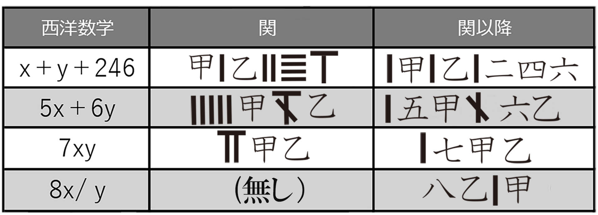
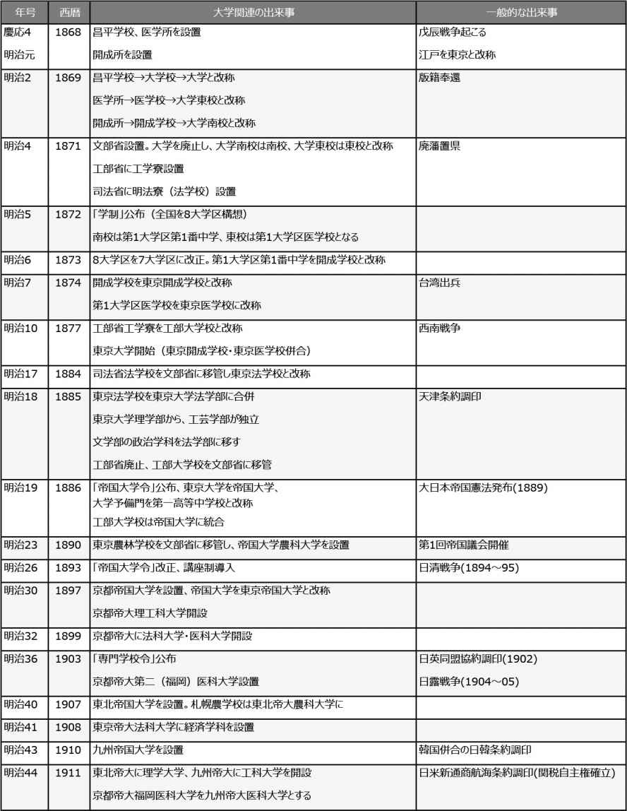
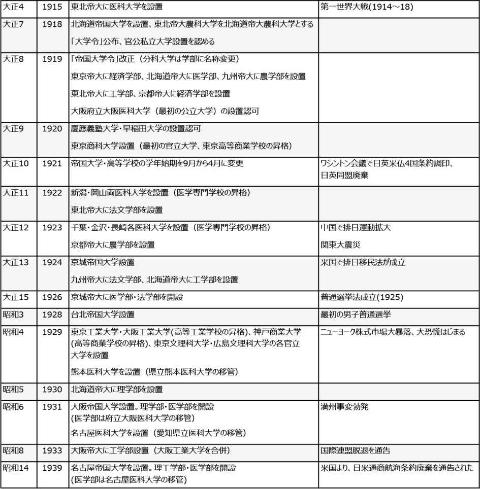
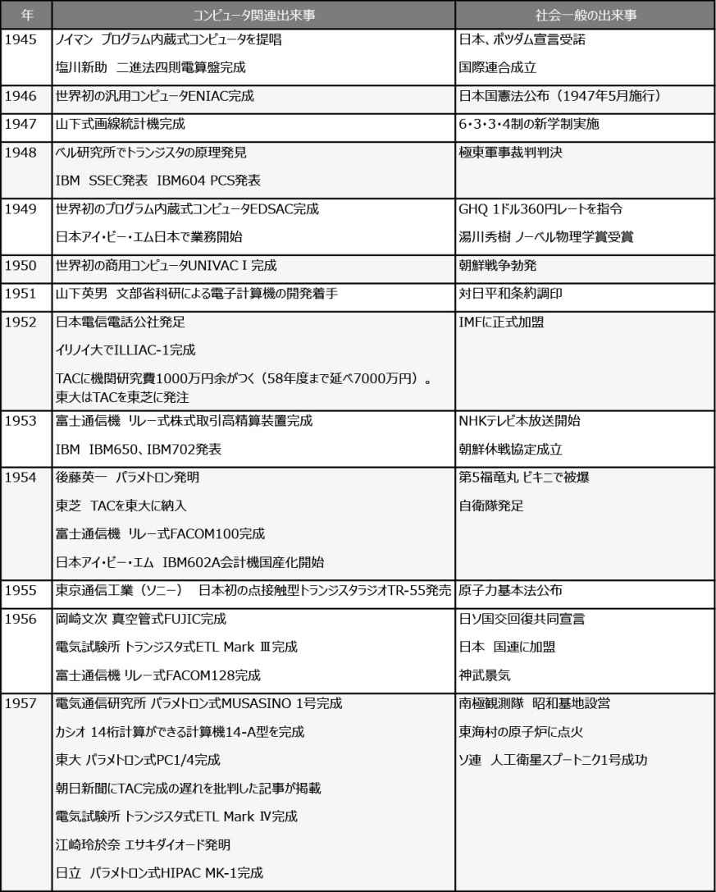
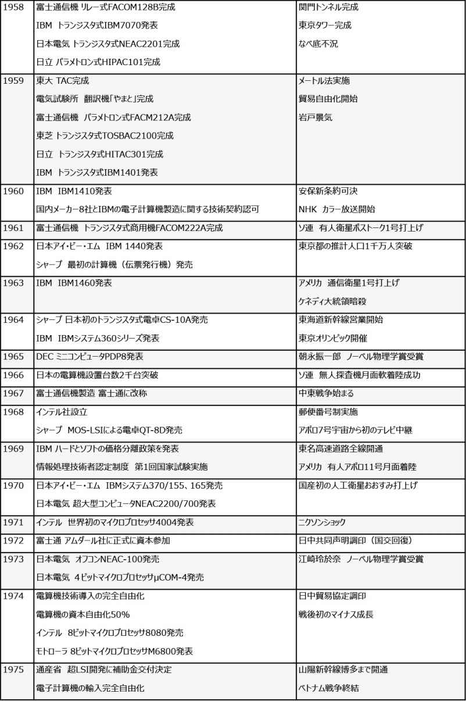
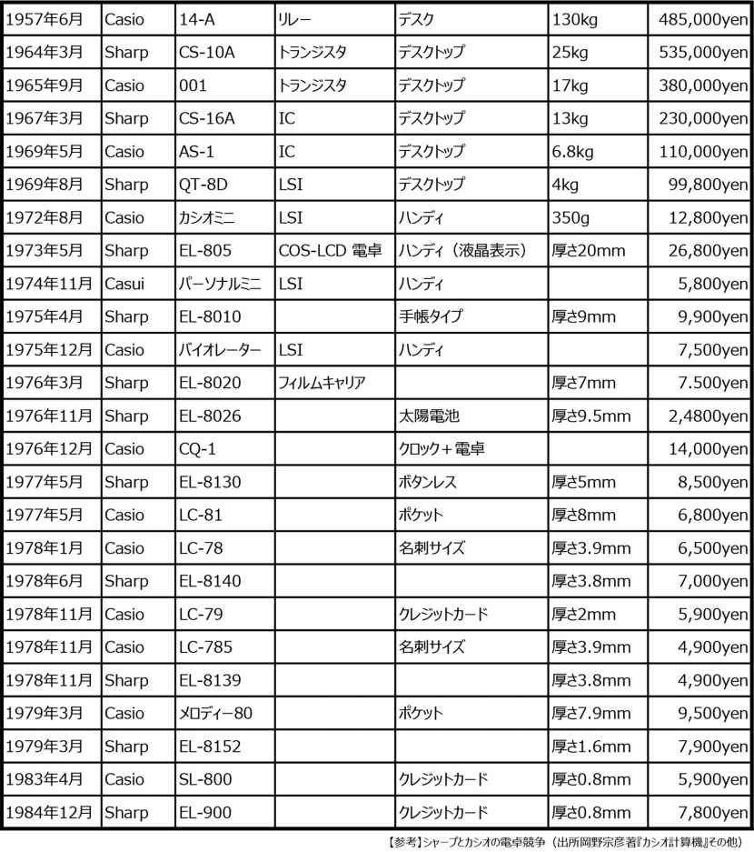

| [明治150周年記念] 名著から問題を読み解く! 明治から日本の未来を考える (7) 科学技術の発展 (impress QuickBooks) | |
| 平田 周三 | |
| 株式会社インプレス (2018) | |
目次
吉田光邦 著
中岡哲郎 著
佐藤和弘 著
中山茂 著
遠藤諭 著
日本科学史
吉田光邦 著
講談社
1987年2月
ISBN：9784061587762
目次紹介
第１章 自然と人間
第２章 古代
第３章 飛鳥と奈良
第４章 平安時代(公家の時代)
第５章 武家の時代(鎌倉より室町まで)
第６章 自然と人間と社会と
第７章 戦国－安土桃山時代
第８章 江戸時代前期
第９章 江戸時代後期
第10章 明治時代
原著者紹介
吉田光邦 (よしだ・みつくに)
吉田 光邦 氏は、京都大学名誉教授。専門は科学技術史。1945年京都大学理学部天文学科卒業。1949年より京都大学に勤務、1977年京都大学人文科学研究所教授、1984年京都大学人文科学研究所所長、1985年定年退官。その後、京都文化博物館館長、京都造形芸術大学教授を務めた。1921年(大正10年)愛知県生まれ。
主な著書、『日本科学史』(朝倉書店、講談社学術文庫)、『日本技術史研究』(学芸出版社)、『日本美の探求―その背後にあるもの』(NHKブックス)、『江戸の科学者たち』(社会思想社)、『日本の職人』(角川選書)、『両洋の眼―幕末明治の文化接触』(朝日選書)ほか。
要旨
古代から明治時代までを対象とするが、真の科学が語られるのはせいぜい江戸時代からで、それ以前は、原著者の科学的視点から見た古代、中世文化史である。日本人の観照的自然観を、和歌などの文学作品を引用しながら、西洋との思想の相違を解説する。それはたいへん興味深く書かれている。
しかし、本シリーズが明治を対象にしていることから、原著書の江戸時代後期から明治時代の内容を主に紹介する。
鎖国を続ける徳川時代、大きな転換期となったのは8代将軍徳川吉宗のときであった。吉宗は、キリスト教に関係のない漢訳洋書の輸入を許可した。これによりコペルニクスやニュートン力学など当時の西洋の天文学がかなりわかるようになった。
数学は、徳川前期から、わが国で独特の進歩を遂げ、和算として世界水準に近いレベルに達していた。しかし、当時の和算は数学理論ではなく、難度の高い問題を巧緻な解法で解くことに関心が向けられ、和算は一種の芸能であり、数学者はギルド的な存在を強めていった。
徳川後期には、蘭学が盛んになり、医学のほか、地理学や生物学などの西洋の知識がもたらされ、大きな影響を与えた。来日したシーボルトの下で優秀な人材が育った。翻訳や教育を行う蕃書調所(洋書調所となり、のち開成所)も設立された。
明治維新は、政治面では根本的な変革をもたらしたが、学問の分野では、幕府の開成所がそのまま受け継がれた。開成所は、開成学校となり、やがて東京大学へと発展する。
科学教育には、来日した外国人教師の功績が大であった。西洋の科学知識を日本にもたらしただけでなく、彼らの指導により多くの俊秀が育っていった。東京大学において、外国人教師の手を借りず、日本人教授による本格的教育がなされるようになるのは明治20年代である。
数学、物理学、化学、生物学、地質・鉱山学など、次第に学問としての基盤が築かれ、明治初期の実用目的から理論的研究へと向かった。世界が認める研究成果も出始めた。
しかし、明治政府の絶対主義的、国家主義的政策は、教育制度にも反映し、帝国大学を成立させた。これによりわが国の学問は、官僚主導、帝国大学権威主義が定着し、その後のわが国の学問にさまざまな歪みをもたらすことにもなった。
コメント
元著者はれっきとした科学史研究の専門家であるが、文学にも造詣が深いとみえて、多分に日本人の特性、とくに自然観を文学の観点からとらえて説明する。
日本人の科学的精神(自然観)があまりに西欧に比べ異質のものだったことがわかる。幕末から明治初期にかけて、外国人教師を招聘し、科学者の教育に当たらせた。また、留学生を欧米に送って学ばせた。その成果は、明治10年代になって花開いた。原著者は、わが国の科学教育が政府主導、東京帝国大学主体の教育だったことにかなり批判的だが、それはともかく、知識ゼロから英仏独語によって外国人教師から習得した明治の研究者たちの学習力には頭が下がる思いである。彼らの努力と成果について、原著者は詳しく説明している。
縮約
１．江戸時代の遺産
江戸前期
鎖国によるキリシタンの禁止は、宗教に関係しない洋書の輸入も途絶えさせた。そのような中にあって、中国の数学に関する本に刺激され、わが国独自の数学である和算が誕生し発達した。
毛利重能を祖とする数学の研究は、門下生の吉田光由が書いた『塵劫記 』と今村知商 の『因帰算歌』が出て、長く和算の標準書として広まった。ソロバンを使っての乗、除、開平、開立の計算法が詳しく述べられているほか、日常必要な諸算法を説明している。億兆京の如く、4桁で数の呼び方を変える日本独特の4桁進法はこれにより一般に普及した。
新風を開いたのが関孝和である。1674年に出した『発微算法』には、未知数を2つ以上含む多元方程式を解く代数算法を編み出した。関孝和の門下に多くのすぐれた数学者を出した。円周率は50位まで求めることに成功、極大極小の問題、行列式の展開、オイラー函数に相当する整数論を考える水準にまで達している。
しかし、こうした世界水準近くにまでなった数学は、秘密主義によってギルド的性格のものとなり、芸能と同じ範疇のものとして考えられた。
【参考】
アラビア数字がまだ採用されておらず、中国で使われていた算木で表した。関孝和は、算木数字から傍書法という代数体系をつくり、これにより未知数の計算ができるようになった。
中国の算木数字を用いた日本での数式表記法

8代将軍徳川吉宗の時代
江戸時代後期、鎖国による停滞に扉を開けたのが、1716年に8代将軍になった徳川吉宗だった。早くから天文、暦学に興味を持った吉宗は、これまで禁止されていたキリスト教に関係のない漢訳洋書の輸入を許可した。
暦術は、集権的な権力維持には欠かせないもので、暦と自然現象の不一致により、支配者は民衆の信用を失うほどだった。改暦を準備した吉宗は実現前に亡くなったが、これをきっかけに、西洋の天文学が次第に知られるようになり、研究を行う人材を輩出した。正確な暦がつくられ、民間では、ケプラーの第三運動法則や太陽自転の周期を黒点の移動観測によって求めており、月面の観測、木星の4衛星の運動、土星の環などについても観測を行っている。
西洋の天文学の知識は、長崎にいた、当時オランダ語の唯一の熟達者だった通詞(通訳)本木良永によって18世紀後半にもたらされた。コペルニクスの地動説が紹介されたのもその頃である。本木の門下生たちによって、ニュートン力学を中心とする天文学が紹介され、カント・ラプラースの星雲説と同一の考えが、独創されていた。しかし、このようなすぐれた研究も一般に知られることもなく、それ以後の発展はみられなかった。
1613年イギリス人ジョン・セーリスが徳川家康に謁見したとき、望遠鏡を献上している。その製作法が国内でも研究され、数々のレンズが製造できるようになっていた。将軍吉宗の頃には、かなり精密な諸種の天文器械が作られていた。
顕微鏡と名づけられた光学器械もオランダから輸入されたが、これを学問的に初めて用いたのは、医学では桂川甫周、博物学では宇田川榕 庵 が植物細胞、昆虫、雪の結晶などの観察を行っている。
数学は、江戸前期においてすでに世界的レベルにまで達していたが、実用性が重視される中、社会の数学に対する評価は低く、また和算家の芸能的性格のため、発達には限界があった。
江戸後期にあって、西洋数学の影響を受けたが、蘭学を実理実用の学と考えたため、純粋数学ではさほどの変化はなく、むしろ三角法の導入、三角函数表、対数表を使った航海表、弾道表などの応用数学が重視された。
蘭学の興隆
西洋の知識は、蘭学を通して日本に入ってきたが、江戸時代後期の学術の主流を占める蘭学者には3つの流れがあった。
1つは長崎のオランダ通詞で、本木氏の系統、吉雄氏の系統などがあった。多くは、辞書・文法書等を中心に語学の発達に貢献した人々であるが、さまざまな本を翻訳し、新知識の啓蒙に貢献した。今1つは蘭学をもって国家の殖産興業に貢献しようとする人たちで、前野良沢、杉田玄白らによる『解体新書』の翻訳に始まる流れであり、幕府の侍医、各藩の医官が多い。
最後の1つは、1823年に来朝したオランダ商館医師シーボルトにつながる人々である。シーボルトから学んだ人たちは正しい西洋科学の理解者となった。
蘭学発展上の大きな転機となったのが、シーボルトの来朝だった。シーボルトはドイツ生まれ、外科と眼科に長じていたといわれる。長崎で鳴滝塾を開いて医学と植物学を教えた。ここに集まったのは、高良斎、高野長英、小関三英、戸塚静海、伊東玄朴、伊藤圭介、岡研介らの俊秀だった。従来医学をはじめとする西洋の学術はすべて書物を通じての知識だったが、シーボルトによって初めて実験観察の実際の態度を学ぶことができた。ここに西洋学術の基本的な思考と観察を具えた蘭学者が生まれたのである。
幕府の対応
1828年、突如、シーボルト事件(日本地図を無断で国外に持ち出そうとした罪)が起き、翌年、シーボルトは国外追放となった。鳴滝塾の塾生38名は下獄した。ようやく起こりはじめた西洋科学についての正しい認識の芽がこれにより摘み取られてしまう結果となった。これは、幕府内の新勢力に対する旧勢力の圧迫が表面化したものだった。
続いて起きた1837年のモリソン号事件(日本人漂流民を載せてきた米商船への砲撃)と、これを契機とする1839年の蛮社の獄(モリソン号事件と政府の鎖国主義を批判したため行われた言論弾圧)により、最も著名だった門下生の高野長英も捕えられた。
その後も西洋学術に対する反撃は続き、とくに漢方医家によるオランダ医術の学修が禁止されるほどだった。しかし、江戸幕府も、次第に増してくる外国との外交問題、眼前に示される西洋文化の優越性等によって西洋学術に眼を開かざるをえず、1856年には蕃書調所(天文方にあった翻訳局を改称)を設け、翻訳以外に蘭書を教えた。
1860年には、民間の80余名の蘭方医が集まる種痘所を幕府直属にし、やがて医学所と称して、教授、解剖、種痘の3科をつくって教えた。
蘭学による学問の興隆
蘭学の興隆により、地理学も新しい面を開いた。平射図法で18世紀のオランダの地図に基づいて世界地図が作られた。1808年には、間宮林蔵の樺太探検が行われ、間宮海峡の発見という業績を残した。
日本地図の作製にも進歩があった。実際の測量術が発達、測量器も開発、改良された。伊能忠敬が現れ、暦術上の必要から子午線1度の測量を1800年に北海道で行い、その後16年を要して日本全土の測量を完成させた。それに使用した機械は、測尺、間竿、星鏡、象限儀、方位盤、杖先羅針盤、垂揺球儀、振子時計、測食定分儀、子午線儀、望遠鏡、磁石、コンパス、量程車、分度矩がある。こうして完成した日本地図は、当時の外国人を驚かせるほど正確なものだった。
エレキテル(電気)といえば、平賀源内の名前が浮かぶが、奇功を好む町の発明家程度にしか認められず、その特異な才能は活かされなかった。ほぼ同時代、橋本宗吉は、大阪の傘屋の子にすぎなかったが、その才能は早くから認められ、援助を受けて正規の蘭学を学んだ。はじめは大阪で医師になり、蘭書の翻訳をしていたが、蘭書からエレキテルの性質を学び、種々の静電気に関する実験やフランクリンの凧による実験をも知り、これを次々と追試した。雷が電気であることを、高さ30メートル以上の松の木を利用しての実験に成功し証明している。
この2人の先駆者に続いて、水戸藩の医官となった青地林宗は『格物綜凡』という本を出し、さらにその中より抄出して『気海観瀾』を1825年に刊行した。「気海」は自然界ともいうべき意味であり、この中で一般物理が述べられている。「理科は物則の学なり」として観察と実験の必要を説いた。これにより、個人的興味や実用価値を求める断片的知識ではなく、体系的な科学(物理学)がはじめて移植されたといえよう。
続いて川本幸民は、青地林宗の『気海観瀾』がごく一部の自然についてしか説かれていないとし、不足部分を補う目的で『気海観瀾広義』を1850年に刊行した。これは一般物理学以外に、化学、博物、天文に関する事項を含んでいる。
精密機械製作技術
フランシスコ・ザビエル以来、渡来した宣教師がしばしば持参した機械時計だが、外国製時計をモデルとして日本製の時計を最初に作ったのは尾張の津田助左衛門で、1598年以前と推定されている。その後、さまざまな時計が作られた。18世紀末頃よりゼンマイ時計が製作された。
江戸末期の田中久重は、蒸気仕掛のからくり人形の細工師から出発して時計師となり、蘭学、天文学をも学んだ。やがて佐賀藩に入り、砲身の中ぐりや蒸気船のシリンダーの製作にまで進んで後、明治に至っては電信機の製作を業とした。職人細工師が、西洋科学を通して科学と技術を結合し、新しい生産形態が誕生した。
博物学
西洋の科学的なアプローチではないが、本草(植物、とくに薬草)、各地の物産、天然石や古瓦などの収集から始まる博物学は、江戸後期にあってかなり盛んだった。幕府の経営する江戸小石川の薬園、1757年に江戸本郷湯島で開かれた物産会(一種の博覧会)、伊豆七島を巡って作られた『豆州諸島物産図説』などがある。さまざまな収集は、考古学に類するものでもあった。
シーボルトが"日本のリンネ"と称賛した小野蘭山(京都)は中国および日本の本草関係の書を読破し、本草の講義を行うかたわら、『本草網目啓蒙』48巻を書いた。薬草の形態や性質についても記述されており、自然誌ともいえる。しかし、基本的な分類体系には注意しなかった。
西洋科学の方法による植物学は宇田川榕庵による『菩多尼訶経』(1822年刊行)が初めてである。"菩多尼訶"はボタニカ(植物学)を意味する。単なる紹介ではなく、植物学全体を論じた西洋植物学の最初は、1835年に出された『植学啓原』である。
飯沼慾斎の『草木図説』は、オランダのオスカンプの薬用植物書に基いて作られ、正確な写生図や解剖図もあり、リンネの分類による分類や術語が用いられている。
２．明治時代の科学の発達
幕府の洋学校開成所
幕末期、徳川幕府は、蘭学を中心とする洋学を重視、翻訳のため蕃書調所(後の洋書調所)を設立した。実用的価値を第一として進められ、暦学、医学、兵学が中心となっていた。しかし、安政、万延の通商条約締結による海外との折衝が重要となり、諸外国との交渉のために多数の通訳官が求められ、従来のオランダ語に加えて、英独仏の3国語が必要語となった。
1860年には、現在の化学科にあたる精煉方が置かれ、川本幸民、市川斎宮が教授となった。この頃より単なる翻訳事業だけでなく、専門学科の研究という新方向が生まれた。特に化学は砲術、冶金等当時必要とされた諸技術の基礎科学として重視された。1861年、西洋画学科(測量、造船等のため)、その翌年には、数学科(航海、機械学のため)が生まれた。
1863年、洋書調所は開成所と改められた。学科として、オランダ、英、仏、独、ロシアの語学と、天文学、地理学、窮理学、数学、物産学、化学、器械学、画学、活字学の9科が設けられた。
明治新政府による学制
幕府の洋学校開成所は、明治新政府に引きつがれ、養成された人材はすべて文化的原動力として新しい活動を担うことになる。蕃書調所より開成所に至る10年の歴史は、明治学術の成立に欠くことのできない要素となった。
しかし、維新当初、明治新政府は復古主義をとり、国学思想(皇学所)や儒学思想(漢学所)が大きな存在だったが、東京遷都とともに、皇学所も漢学所も閉鎖となり、1869年(明治2年)には昌平学校、医学校、開成学校が再興され開校した。昌平学校は儒学、漢学を教え、開成学校は洋学、医学校は西洋医学を学ぶところとし、これらを総合して大学校とした。
それでもなお、その指導方針は、神典、国典の学を中心とするという国家中心主義が重きをなし、その一方で、兵学、医学を中心に西洋の学も重視すべきとし、当時の日本がめざした方向を示した。西洋学制採用について、儒学、国学派と洋学派が激しく抗争した。
廃藩置県に至り、明治政府の強力な集権政治確立に向かう施策によって、残存した封建的身分社会、封建的武士団は次第にその姿を消し、やがて文部省が新設された。新進の官僚が中心となり、文部大輔江藤新平は果断な新官制を施行し、多くの洋学者を起用した。
新たな学制が公布され、実学をすすめ、四民平等に教育が開放されるべきことを宣言した。その実施にあたっては、初頭教育の小学校を第一とし、師範学校、商業学校の設立をめざした。大学は、法、理、医、文の4科に分け、西洋大学制度に倣うものとなった。
まず閉鎖されていた大学を再興するため、1873年(明治6年)、かつての大学南校が開成学校として開かれ(翌年東京開成学校に改称)、使用外国語は英語とされ、法、化、工、諸芸、鉱山の5専門学校がこの中に含まれた。
1874年(明治7年)、東京開成学校は、本科生24名でスタートし、化学は9人、工学は6人だった。外国人教師が招請され、それ以後、開成学校は学生も増加し、拡大していった。1877年(明治10年)には、東京開成学校と東京医学校の合併により東京大学が誕生した。完全な綜合大学になったのは1881年(明治14年)である。東京学士会院をはじめ、多種多様の学会が創設され、日本の学術界もようやく一通りの体制が整えられた。
1886年(明治19年)、東京大学は帝国大学となった。政治では、太政官制が廃止され、内閣制度に変わった。自由民権運動が高まり、欽定憲法による立憲政治確立の準備が進んでいた。啓蒙思想がその役割を終え、ロマンチシズムの芽がみられはじめたときである。官学主義、国家主義の理想を掲げた帝国大学は、以後の日本の全学術体制を規制するものとなる。
明治期の学問の進歩
【数学】
数学は明治の変革において最も大きな変革を受けた学科だった。徳川期、芸能的な巧緻さで磨かれた和算は、長い伝統の上に独特の性格を形成していた。相当な独創性も残しており、西洋風の数学、特にその論理的な体系はほとんど無視されていた。
学制改革により、1872年(明治5年)に和算は廃止となり、洋算の全面的採用となった。全国の小、中学校はことごとく和算に代えて洋算の教育となった。しかし、洋算を知る教員の数は不足し、中学校では外国語の教科書をそのまま使用した。したがって、その内容は著しく低く、大学南校ですら、加減・乗除・分数・比例までが必須で、対数・開平・開立、代数・幾何は普通科の最高とされた。
1877年(明治10年)、東京大学に数学科が設立された。数学科の教師は、米人パーソンと仏人マンジョウで、菊池大麓が数学物理関係唯一の邦人教授として在任していた。菊池は、11歳のとき英国に留学しているが、再度留学し、ケンブリッジ大学を卒業して明治10年に帰国し、直ちに教授となった。以後、菊池は数学のみならず、明治における学術、教育の中心的指導者として足跡を残した。とくに中等教育でも貢献し、初等幾何学の教科書をつくった。
1886年(明治19年)、帝国大学となったとき、数学科にはもはや外国人教師はおらず、菊池が主宰していた。翌年には、大学を明治15年に卒業し、ストラスブルグ大学に留学していた藤沢利喜太郎が日本に戻り、教授となって菊池とともに以後1921年(大正10年)に至る30余年間、数学科の経営にあたることとなった。藤沢は、ストラスブルグ大学で学位論文として展開の理論を発表し、ついで主として解析学の研究を行った。保険の数理論、統計学等の実用数学の紹介も行い、大きな影響を与えた。
これらの人たちによって、ようやく近代数学は日本に移植され、科学としての数学が独自の地位を保ちはじめた。河合十太郎、林鶴一、高木貞治、吉江琢児、中川銓吉などが数学の発展に寄与した。
【天文学】
西洋科学の流入は、天文学においても著しかった。1871年(明治4年)、内務省地理局に観測課天象部が設置され、実用天測が初めて行われた。明治7年には、海軍省水路部観象台で天測事業が開始されている。こうした実用天文学以外の最初の学術上の観測は、1878年(明治11年)東京大学理学部で米人教師メンデンホール指導の下、重力測量に必要な観測が行われたのが最初である。田中館愛橘、藤沢利喜太郎、田中正平、隅本有尚らがこれを手伝った。明治13年には、富士山頂でメンデンホール、チャプリンが同様の重力観測を行った。
1883年(明治16年)、フランスに留学していた寺尾寿が帰国した。寺尾は、フランス政府の金星観測隊の作業に加わり、帰国した年、宮城県下での金環食観測を行うなど実地天文学の研究を続けた。明治18年には、天体力学、球面天文学の講義を開くなど、ようやく天文学も純粋な科学としての研究が実行されはじめた。
1888年(明治21年)、内務省地理局、海軍水路部、東京大学の観象台の3者を統合して、東京麻布飯倉に東京天文台が設けられた。理科大学付属となり、寺尾寿が初代台長に就任したが、開設当初の設備は子午儀、子午環、赤道儀2基しかなく、台長の寺尾のほか観測手1名、編歴係2名というささやかなものだった。
その後、土地が手狭になり、都市の煙霧による観測の支障もあり、1909年(明治42年)には、三鷹に土地を購入し、1914年(大正3年)にようやく現在の東京天文台の成立となったのである。
1899年(明治32年)、万国測地学協会によって、世界の緯度変化の共同観測が開始され、岩手県水沢に緯度観測所が設立され、木村栄が所長として観測事業を行った。明治35年、木村を世界的に著名にしたZ項の発見がなされた(緯度観測データの誤差補正値)。
この頃より純粋天文学の研究もようやく軌道に乗るに至り、平山信の小惑星の発見と軌道の決定、太陽黒点の統計的研究、一戸直蔵の変光星研究、平山清次と小倉新伸吉による中国古記録による年代学等、各種の理論天文学の紹介研究が始められた。しかし、官学中心、中央集権の通弊から、観測器機類は輸入品に頼り、国内での開発はなかった。理論的な天文学は国益万能、国権の拡張を中心とする明治政府からは無用のものとしてほとんどかえりみられなかった。
(注)Z項を発見した木村栄は、1937年第1回文化勲章を受章している。
【物理学】
物理学は外国人教師によってその糸口が開かれた。大学南校時代には、物理学は「窮理学」の名が用いられ、ウィードルという外国人教師がいた。開成学校になってから「物理学」の名が公称となった。学習課程には、重学としてキネマチック、スタチック、ヂナミックの分類が1年にあり、2年に静水、動水、電気、磁石、3年に器機の実験と論理、視学、光線の器械、聞学、温学、蒸気器械の講解があげられている。
1876年(明治9年)の改正では、重力、電磁作用、電気流動論などの新しい術語が加わった。外国人教師には、物理学の分野で、マイヨ(仏)、メージョル(英)、グリフィス(米)、クロッツ(仏)、パーソン(米)、マイエー(仏)、ロックウェル(米)、ベルソン(仏)らの名前がある。これら外国人教師の努力によって、近代科学の基礎がつくられた。
1877年(明治10年)に設立された東京大学では、理学部の中に数学・物理学及び星学科を称する一学科が独立した。明治14年に至って、数学、物理学、星学がそれぞれ独立して、物理学科のみの新しい方向が開かれた。これに加えて、ドイツ語が必修語となり、仏語物理学が消失することとなった。
明治10年当時には、なおヴィヴィダル、ベルソン、デーブウスキーらの外国人教師が教えていたが、山川健次郎、古賀護太郎が助教として参加している。この後も外国人教師が相次いで来日したが、1891年(明治24年)のノットの帰任以後、外国人教師は後を絶ち、山川健次郎、田中館愛橘、菊池大麓、そしてのちに長岡半太郎らにより東京大学を中心として近代物理学が育成された。
欧米の成果の速やかな移植が重要だったため、独創的な研究業績は残せなかったが、明治21年頃より、長岡半太郎、本多光太郎らがその後継者となって研究を進め、のちにおける強磁性体の問題の発展の基礎が築かれた。
【化学】
化学分野の基礎工事は、幕末期、市川斎宮、川本幸民らを中心とした精煉方(のちに化学局)に始まっている。それは、主として火薬など軍事目的であった。その組織と構想はそのまま明治政府に移された。
1868年(明治元年)、大阪に、明治3年には京都に、それぞれ舎 密 局(化学局)が創立されて、東京と同じく新工業への道が開かれる。大阪では、オランダ人ハラタマが教師として入って、近代的な実験化学を教えた。東京では、宇都宮鉱之進、柳川春三、米人グリフィスが化学の教師として活動した。
1874年(明治7年)、東京開成学校が成立すると、理学は法、工、諸芸、鉱山と並んで専門校の一つになった。その課程には、度量分析、製作化学、有機性化学、金石学、地質学、物理学及び精煉局の実験、試金、採鉱学などの名前がある。
この頃、来日して教えた外国人教師には、クラーク(米)、クロッツ(仏)、アトキンソン(仏)、マイエー(仏)、ロックウェル(米)、ランガルト(独)ジューウェット(米)らがいた。いずれも、それぞれの役割を果たしているが、とりわけアトキンソンは、英国の化学者ウィリアムソンの高弟で、熱心に学生を指導し、人材を育てる一方、自らも研究を行い、日本酒醸造など産業界での指導にもあたった。
のちに就任したワグネル(独)は明治の工芸界に大きな足跡を残している。鍋島侯(九州肥前)の招請によって来朝し、東京に招かれて大学南校の教師になるとともに、勧業寮にも勤務し、明治25年、62歳で東京で亡くなるまで、日本の伝統工芸を尊重し、理解してその近代化と人材育成に貢献した。
化学分野で、物理の山川健次郎に対比されるは桜井錠二である。1876年(明治9年)に英国に留学、著名な有機化学者ウィリアムソンに学び、明治14年に帰国して、翌年東京大学教授になった(のちに理化学研究所副所長になる)。東京大学化学科にあってよく学生を指導し、自らも研究を行った。1892年(明治25年)には、沸点測定についてベックマン法の改良研究を行った。この研究は化学界における日本人化学者の最初の世界的功績といわれる。
桜井と協同した池田菊苗も、1908年(明治41年)にグルタミン酸塩の性質と製造の研究を行い、「味の素」工業の道を開いた。1910年(明治43年)には、農芸化学科出身の鈴木梅太郎によってヴィタミンが発見され、オリザニンとして製剤された。
応用化学科を卒業した高峰譲吉が1902年(明治35年)、ニューヨークに高峰研究所を設立し、アドレナリン、タカジァスターゼなどを創製した。
【生物学】
動植物学(生物学)は、他の部門と違って、本草あるいは博物学として幕政時代に独特の発達を遂げていた。明治政府になって、文部省の博物局がこれを継承した。博物局は、国内産の諸種の標本収集に努め、一方で殖産興業として新産業の奨励を行った。
その中心人物は田中芳男で、パリの万国博覧会をはじめとしてしばしば海外に渡航し、1871年(明治4年)には物産会を開いて日本の諸物産に対する啓蒙運動に努力した。いわば、本邦応用動植物界のパイオニアである。
1875年(明治8年)、英国のチャレンジャー号が来航し、日本各地の海産生物、浮遊生物の調査を行った。明治12年にはスエーデンのヴェガ号が千島から台湾に至る海域の生物調査を行い、多くの成果を収めた。これら学術探検船の来航が、日本の草創期の生物学に大きな影響を与えた。
当時日本に在留していた外国人の中には、アマチュアとして日本の生物に興味を抱き、日本植物誌を残したサバチエら、蝶類の収集研究で知られたプライヤーなど、すぐれた業績を残した者が少なくない。魚類・貝類のヒルゲンドルフ(独)、海産動物一般のドーデルライン(独)は、医学教授として来日したが、近代的動植物学をはじめて日本人に教授したことで記憶される。
1870年(明治3年)、矢田部良吉がアメリカに官費留学生として渡航し、コーネル大学でグレイから植物学を学んだ。1877年(明治10年)、東京大学が設立され、理学部内に生物学科が開設された。学生は4年になると、動物あるいは植物のいずれかを専門科として選択する。動物学は米人モース、植物学は留学から帰国した矢田部が教えた。
大森貝塚の発見・発掘者として知られるモースは、日本の石器時代を唱え、本邦における近代人類学の端緒を開いた。ダーウィンの進化論を発表されてわずか20年のうちに日本に紹介されたことは、単に生物学界のみならず、一般思想面にも大きな影響を与えた。モースは、日本に対して深い理解を持ち、全国を旅行し、諸種の民族資料、陶磁資料の収集も行い、ボストンにコレクションをつくったことでも知られる。
1879年(明治12年)に来日したホイットマン(米)は、モースの後を受けて指導したが、モースと違い、純粋な研究者で、顕微鏡を用いる組織学や発生学の分野で学生を指導し、飯島魁、石川千代松、岩山友太郎、佐々木忠次郎らが育った。
1881年(明治14年)末、箕作住吉が帰国して、はじめて邦人教授が動物学を担当することとなった。箕作は、1873年(明治6年)に渡米、エール、ジョン・ホプキンス大学を経て、さらにイギリスに渡りケンブリッジ大学のバルファアに師事し、発生学を研究した。帰国して日本の動物学界の指導者となった。亀類の発生研究において世界の学界の注目を集め、これに続いてナマコを研究するなど、すぐれた業績を残した。その他、一般教育にも力を入れ、広島県のカキ養殖、御木本幸吉の真珠養殖についても努力した。
矢田部良吉は、1877年(明治10年)より東京大学で植物学の講義を開始し、植物学の最初の基礎を開き、また日本産各種植物の標本収集も行った。矢田部の標本収集に協力した松村任三は、各地に旅行して膨大な標本収集を行い、東京大学の巨大な所蔵標本の基礎を固めた。矢田部、松村の植物学は主に分類・形態学に関するものだったが、1895年(明治28年)には三好学によって、生理、生態方面が開拓されて新しい学問の方向も開かれた。
そのほか、形態学において1896年(明治29年)、平瀬作五郎のイチョウの精虫の発見、同じく池野成一郎のソテツの精虫の発見は顕花、隠花二植物系の関連性を明らかにしたものとして世界の学界から注目された。
1877年(明治10年)のモースによる大森貝塚発見・発掘によって人類学が開かれたが、以後、先史考古学方面に対する興味が盛んになり、1884年(明治17年)には有坂しょう蔵が東京本郷向ヶ岡で発掘した土器はのちに弥生式土器と命名された最初のもので、縄文式土器に対して本邦古代文化史上に重要な意味をもつ記念すべき発見となった。
英国に留学していた坪井正五郎により、1893年(明治26年)より東京帝大に人類学講座が開設された。
【地質・鉱物学】
地質・鉱物関係の諸科学は、明治政府の産業奨励政策によって開かれた。1872年(明治5年)に北海道開拓使はアメリカよりライマンを招き、北海道の地質調査を行った。ついで越後および遠江の油田調査を実施した。さらに明治11、12年にわたる日本の地質調査により、近代地質学の芽が生まれた。ライマンの調査の助手を務めた人たちが、その後、各地の鉱山、炭田の発見に成功している。
大学南校でも、開成学校でも、地質鉱物学は独立した学科となっており、外国人教師が招かれた。シュンク(独)リットル(独)、モンロー(米)、ナウマン(独)らが活躍した。
1877年(明治10年)、東京大学が設立され、理学部内に地質学及び採鉱学科が置かれ、主任教授にナウマン、助教に和田維四郎が就任した。ナウマンは日本列島の地体構造について研究を進めた。ナウマンの意見により、従来の地理寮に代わる地理局内に地質課が置かれ、明治15年には農商務省に地質調査所ができた。和田が所長となり、日本の地質調査が組織的に開始された。
東京大学地質学科最初の卒業生となった小藤文次郎は、日本の諸火成岩、造岩鉱物、地震等についての研究を残した。横山又次郎は、地史、古生物学関係の学の紹介にあたり、日本の第三紀層の研究を行っている。
1880年(明治13年)2月22日、横浜付近に起きた地震は、当時日本に在留していた外国人学者の間に地震に対する関心と注意を呼び、日本地震学会が設立された。数学・物理関係の多くの内外学者が参加し、地震の科学的研究が行われた。
外国人教師の帰国により、地震学会の活動は衰えていったが、1891年(明治24年)の濃尾大地震が発生し、地震に対する新たな関心が生まれた。菊池大麓の提唱により、文部省内に震災予防調査会が設立された。地震現象のみならず、火山現象に至るまで広範にわたる調査研究が行われ、1925年(大正14年)に創設された地震研究所に引き継がれた。大森房吉が中心人物だった。
３．明治の精神と変容
明治の精神
「明治天皇が崩御になりました。其時私は明治の精神が天皇に始まって天皇に終わったような気がしました」は、夏目漱石が1914年(大正3年)に出した小説『こころ』の中の一節である。同時代を生きてきた文学者が、明治維新から始まる45年間が特別の一区画をなす時代として感覚していたのである。維新前の時代とは断絶した新しい時代は、産業革命を経由して近代社会を熟させつつあったヨーロッパ、アメリカに対決し、にわかに世界に対する視野を持つことを強要した。
明治初期は、従来の身分社会の階級的な束縛から解き放たれて社会を浮動してゆく階層が発生した。それは明治特有の思想家と呼ばれる一群の人たちだった。かつての統制された思想に代わって自由競争を旨とした多種多様の思想が用意され、啓蒙思想の媒介者となった学者、ジャーナリスト、文学者はすべて思想家としての共通地盤を持っていた。
しかし、明治政府と社会の機構が新しい意味での封建的構成に次第に変化してゆくにつれ、学者は国家官僚組織の中に、ジャーナリストは資本制産業機構の中に、文学者はギルド的な徒党制の中に吸収されてゆく。これによりそれまでの自由に浮動する思想家という地盤は失われていったのである。
こうした明治後期には失われていった共通の地盤、共通の性格こそがいわゆる明治の精神であった。それいわば青春の思想ともいうべきものだった。明治の国家、社会そのものが先進国の間に伍して背伸びしなければならず、思想家群たちも性急な西欧思潮の追跡に専心せねばならなかった。そして、強制された視野の拡張によって幾多の歪みと変革と混乱を持った時代が生まれたのである。
しかし、発展してゆく日本の資本主義機構、市民革命の挫折、絶対主義政府の成立などに現れる新しい思想層の戦いは、明治維新につながる明治の精神の上に平衡を保ったままで続けられていた。そのバランスが失われた混乱期が、次に来る大正期の動揺と分裂だった。
日本人的心情と明治の葛藤
福沢諭吉が『学問のすゝめ』の冒頭で「天は人の上に人を造らず、人の下に人を造らずと云えり」と説いた啓蒙的な自然法の思想も、社会の現実から離れてしまった観があった。人民独立の気力を説き、文明の精神の確立を叫んでも、それは、再びかつての心情の論理を回復した一般社会に対して、かすかな警鐘でしかなかった。日本人の中には古くより流れている抒情の上に立った行動が重きをなしていたからである。内的な自己規制の力を情感によって捕らえるのが日本人固有の心性である。
明治政府の実学尊重、実利主義中心の政策がさらに拍車をかけた。新しい官僚制が確立すると、庶民は一時安定した社会にあることを感知し、享楽主義を追求することになった。東京においては、弱肉強食的な実力主義となり、貧富の差は拡大した。富国強兵のみを政策の中心に置く政府は、国権の伸長のみ配慮し、社会政策は貧困をきわめた。
プロテスタンチズムは、こうした社会の矛盾層の中にその裂目を見出して流入した。しかし、プロテスタンチズムの持つ清潔さ、享楽主義の否定に共感した人々は、やがて激しい反キリスト教の嵐の中で戦わねばならなくなった。プロテスタンチズムから出発したロマンチシズムもまた、なお根柢深い江戸以来の武家の伝統に敗れた。
日露戦争が起こり、時を同じくして自然主義の声が揚がりはじめた。その一方で、西洋科学の強力な成果と客観性の中に、最後のよりどころが求められた。明治政府のもつ国権を中心とした強力な組織、社会の各層に深く沈殿した封建遺制の只中で、勝利の悲哀が明治の人々を襲ったとき、人々は最も身近なところにある客観性に最後の根拠を求めねばならなくなったのである。
こうした自然主義の潮がすべてを蔽ったときに、明治の精神は終わりを告げたのだった。文明開化の精神に出発し、日本の社会に人間的な西欧人文の輝きを定着させようと試みた人々、西欧の市民精神をもって日本の市民精神の復活を考えた人々が、暗い封建社会のよどみと、明治政府の絶対主義的権力の前に敗退したとき、彼らを共通的に支えていた明治の精神もその生命を終えた。
日本近代技術の形成
＜伝統＞と＜近代＞のダイナミクス
中岡哲郎 著
朝日新聞出版
2006年11月
ISBN：9784022599094
目次紹介
第１章 工業化の始点
第２章 武士の工業
第３章 明治維新と工部省事業
第４章 過渡期の在来産業－その原生的産業革命
第５章 機械紡績業の興隆
第６章 工部省釜石製鉄所から釜石田中製鉄所へ
第７章 近代造船業の形成
第８章 日本近代技術の形成
原著者紹介
中岡哲郎 (なかおか・てつろう)
中岡 哲郎 氏は、技術史家。大阪市立大学名誉教授。1953年京都大学理学部卒業。定時制高校教諭、企業技術者を経て、神戸市外国語大学講師、大阪市立大学助教授、のち教授(1992年定年退官)、大阪経済大学教授を歴任。1983年、メキシコのエル・コレヒオ・デ・メヒコ客員教授。1928年(昭和3年)、京都生まれ。
著書には、『工場の哲学』(平凡社)、『人間と労働の未来』(中公新書)、『自動車が走った』(朝日選書)、『メキシコと日本の間で』(岩波書店)、『近代技術の日本的展開』(朝日選書)などがある。
要旨
原著者中岡哲郎氏は、1983年にメキシコの大学で客員教授を務めた経験がある。そのとき、日本と同様に西欧の技術経済に直面したメキシコなど中南米諸国がその後、日本のように産業の近代化を実現することがなかったのはなぜかということを疑問に思った。日本はなぜ「低開発の開発」の道をたどらなかったのだろうか。この問題について、以後研究を重ね、その考察が本書にまとめられている。
名著『開発と低開発』によってラテン・アメリカ経済の理解に大きな影響を与えたブラジルの経済学者セルソ・フルタードは、「低開発の開発」として混血型経済を考えた。中心に主として外国資本に依存した資本主義部門があり、その外側を前資本主義的在来経済部門が取り巻き、その二部門の間で、後者から前者へは労働力供給、前者から後者へは賃金収入の流入という関係だけでつながれているというモデルである。このような経済構造では、資本主義部門は資本投下した国の経済の一部としてしか機能せず、現地の前資本主義経済に資本主義的発展の核を生み出す作用が生まれないことを、植民地のプランテーション経営などを例にして説明した(Furtado 1964)。
フルタードの仮説が正しいとすれば、ではなぜ日本は「低開発の開発」の道ではなく、資本主義的発展の道を歩むことができたのか。
その答えとして、中岡哲郎氏は次の4つの理由をあげる。
1.日本が政治革命により植民地化の危機を免れたこと
2.在来産業が西欧の新技術を活用しながら発展を遂げたこと
3.在来産業と西洋技術の導入によって生まれた移植産業との相互間にきわめてダイナミックな影響の交換が起きたこと
4.アジア間貿易が発展した事実
さらに、わが国の近代技術の特色として、技術者(エンジニア)という職業集団が国家の制度としての学校で養成されたことを重視する。その結果、1910年前後をめどに、日本の近代技術は1つの到達点に達したといえよう。
日露戦争での勝利によって、日本が欧米先進国と肩をならべつつあるという達成感が起きた。しかし、日本が欧米との技術格差を縮めようと必死に努力している間に、欧米各国は電気、通信、合成化学、自動車、石油精製などの新産業分野で次々と巨大世界企業を生み出す新段階に入っていたのである。日本はそのことを見誤った。
なぜ見誤ったのか。これについて中岡氏は、ナショナリズムの熱狂が、日本人の技術に対する眼を狂わせたとみる。そのことが、太平洋戦争へと向かわせた。
以上の考察は、本書の第8章「日本近代技術の形成」で述べられていることである。第1章から第7章にわたって、上記の結論を導く在来型産業と移植型産業の歴史的推移について詳細な分析と、両者間の相互補完を論証している。
コメント
なぜ、アジアをはじめ西欧以外の諸国では、わが国が経験した「明治」、すなわち技術・産業の近代化が起きなかったのか。この問題が常に私の頭にまとわりついていた。原著者の中岡哲郎氏の緻密な分析から導かれた見解は明解である。確かに、日本人は西欧技術を取り入れながら、それを伝統産業(在来産業)の中に活かした。それだけでなく、その両者がうまく補完しあった。
ただ疑問は残る。日本人の気質や好奇心、上昇思考、伝承的な器用さといったパーソナルな要素も無視できないのではなかろうか。とりわけ国が危機に直面したときに発揮する集団的行動は、日本人特有のものといえるのではないか。それは集団性に特徴づけられる国民性として、欧米とは明らかに異質である。
縮約
１．日本はなぜ他の低開発国とは違ったか
西欧技術の出会い
鎖国を続けていた日本よりも先に、アフリカ、中南米、アジアの諸国は西欧の工業経済の波に遭遇していた。だが、日本のように、近代的工業を発展させ、国内に独自の資本を蓄積できた国は、日本を除いてなかった。同じように低開発国だった日本だけが西欧と肩を並べることができたのはなぜか。原著者の中岡哲郎氏は、メキシコに客員教授として1年間滞在したときにそのことに疑問を抱き、幕末に日本がヨーロッパ工業経済の前線に出会ったときから、1910、20年代ごろまでの日本の産業と技術の変遷を研究した。
明治の日本の工業化の流れは、江戸時代に形成された「在来産業」の発展とヨーロッパ工業経済を国内で実現した「移植産業」の発展の二部門によって構成されている。前者は、ヨーロッパ工業経済の製品を在来の手工業的分業の内部に、素材や器械として取り込んで発展した混血型産業である。
その2つの異質の産業が、たぶんに相互補完関係にあったことに、わが国の低開発からの開発の特長がみられる。在来的な要素と西洋から入ってきた要素とのあいだの競争と相互作用の中から絶え間なく矛盾が生み出されたが、それを克服しようとする努力をとおして、ダイナミックな発展が維持された。
在来産業の代表は製糸業と織物業だった。移植産業では、鉄鋼業、鉄道業、造船業があげられる。
「低開発国の開発」
ブラジルの経済学者セルソ・フルタードは、中南米経済の発展研究から、「低開発の開発」という混血型経済モデルを提唱した。中心に主として外国資本に依拠した資本主義部門があり、その外側に前資本主義的在来経済部門が取り巻くという構図である。その二部門のあいだは、後者から前者への労働力供給、前者から後者への賃金収入という流れの関係だけでつながれているような経済だった。そのような型の混血経済では、資本主義部門は資本投下した国の経済の一部としてしか機能せず、現地の前資本主義経済に資本主義的発展の核を生み出す作用をもたない。これがフルタードの仮説である。
しかし、日本はフルタードのモデル「低開発の開発」では説明できない資本主義的発展を遂げることができた。それはなぜなのか。
疑問への解答
中岡氏は、この疑問についての解答として、「政治革命」「在来産業の発展」「在来産業と移植産業の相互補完性」「アジア間貿易の発展」の4つを要素としてあげる。順次、この4要素について以下に説明する。
【政治革命】
日本がヨーロッパ工業経済に取り込まれなかったのは、政治革命に転化させることによって、植民地化の危機を免れたことがある。メキシコでの滞在経験から、中米において植民地時代に形成された構造が産業の正常な発展をいかに妨げているかを実感した。これに対して日本は、サムライたちが幕府を倒す政治革命を実現し、西欧型国民国家の形成をめざす主体をつくりあげた。これが低開発の開発を歩まなかった第一の原因である。
幕末の志士、知識層は日本が列強により植民地化されることを極端に恐れ、明治初期の指導者たちはかたくなまでに外国人の直接投資を警戒した。資本のないまま工業化を急ぐことは矛盾に満ちたものだったが、国内に誕生した資本主義部門の核を、全面的に在来経済と結びつける体制を準備した。
その背景には、維新により営業の自由、封建的身分制の撤廃が大きな力となった。それは民衆の上昇志向をもたらした。初期の官営事業は、デモンストレーションとしての効果を発揮した。
【在来産業の発展】
『農商務統計表』によれば、1897年(明治30年)に織物業だけで100万人の雇用を生み出していた。このような発展は、製糸、陶・漆器、酒造、食品加工、家具製造、鉱物・鍛治・板金等金属加工など在来産業の全域に及んでいる。西洋から移転された新産業による雇用創出ではなく、在来産業で大幅な増加となっている点が注目される。この発展は、国民の多数がすでに身につけていた在来技術の領域で起こったのである。
官営事業の意図した19世紀半ばのヨーロッパ工業体系の日本への移植は、大規模な投資を必要とする点で貧乏国の経済条件にはそぐわなかった。移転技術を習得するにも、10年、15年の年月を要した。その間を支えたのが、在来産業の発展であった。中村隆英の計測では、1886年(明治19年)は製造業の生産額の95%が在来部門となっている。
なぜこのような発展が当時の日本でありえたのか。国内的条件としては、江戸時代に、江戸、大坂、京都の大都市市場を中心に手工業による商品生産がかなり高度な展開を遂げていたこと。もう1つは、それを取り巻く農業の小規模労働集約性と水田稲作農業の持つ強い季節性があげられる。農村の農閑期副業によって支えられる構造をつくり出していたのである。
すでに江戸時代、高度に発展していた手工業的産業が、幕藩体制からの自由、開港による西欧の素材や技術知識の流入に、封建主義と鎖国主義で押し込まれていた抑圧の反動として一気に新しい流れをつくった。さらに、欧米の技術による大量生産が可能だったとしても、当時の技術水準では、手工業が機械制生産に対抗できたことも重要である。多品種少量生産には、手工業のほうが有利だった。
【在来産業と移植産業の相互補完性】
在来産業の発展が経済を支える一方で、移植産業もまた力を発揮した。移植産業には、紡績業のほか、政府事業の電信・電話、鉄道、汽船海運、造船、ガス・電力、製鉄、肥料・硫酸・ソーダ等の化学、鉱山などの産業が含まれる。手工業的在来産業がもっぱら消費財生産の広範な領域をカバーしていたのに対して、移植産業はインフラストラクチュア的領域と、生産活動の素材的領域を、機械装置は大幅に輸入に頼りながらカバーしていた。
フルタードのモデルにおける混血型経済に似るが、この2つの部門を労働力供給と賃金収入という流れだとしたのに対し、明治の日本の場合は、生産の流れの上流と下流という形でつながっている点が大きく異なる。
【アジア間貿易の発展】
フルタードのモデルでは、西欧への一次産品輸出と、西欧からの工業製品輸入という構造で説明するが、日本の場合は、中南米やアフリカにはなかった、アジア諸国間で盛んに貿易が行われていたという点がまったく異なる。
1883年(明治16年)当時は、インドから中国へ向かう輸出だけがアジア間貿易の主要な流れであり、その流れの大部分がアヘンだった。15年後の1898年(明治31年)には、日本→中国、インド→東南アジアという流れが加わり、その主内容は綿糸、綿製品だった。インド→中国の流れでもアヘンの比重が落ち、綿糸が首位になっている。インドの近代紡績業と、それに少し遅れて成立した日本の紡績業の製品がアジアに大きく影響を及ぼしはじめる。
さらに15年後(1913年)には、中国から日本、東南アジアに向かう流れ、東南アジアからインド、日本に向かう米、砂糖を中心とする流れ、インドから日本に向かう流れも加わり、4地域相互間の貿易ネットワークが完成される。アジア間貿易の総額は、1883年の3377万ポンドから1913年の1億6730万ポンドへと、30年間にほぼ5倍の成長をみせている。
このようなアジア間貿易の進展は、4つの地域の地域間分業をはらんだ、アジアの産業発展を反映したものだった。しかし、そのような交易の発展を支えるには、当然、アジア間航路網の発展、各港湾の整備と内陸部と港を結ぶ鉄道建設、石炭補給、電信、金融、保険等の関連事業の発展がなければならなかった。
これらの活動にかかわる技術はすべて欧米から移転され、それに伴って必要な資材、設備、機械もすべて欧米から輸入された。欧米へ向けての一次産品輸出の流れはそれらの輸入をまかなう役割を果たした。
中南米やアフリカでは、一次産品輸出がそれらの地域の西欧に対する従属的関係の起点となったのとは対照的に、アジアの場合は域内貿易のインフラストラクチュアを近代化する外貨源となる形で、域内諸国の経済発展を支える力となったのである。
明治期における日本の発展も、アジア間貿易をとおしてアジアの発展と一体であったことがわかる。とくに近代紡績業の発展と、手工業依存型消費財産業の発展は、アジア間貿易の成長と不可分だった。
２．エンジニア社会集団の形成と教育
エンジニアという社会集団の形成
日本の近代技術の出発点は、蘭学者による鋳砲の製造・艦船建造のような軍事に関係するものであった。西欧流の軍備を日本でも実現しようと努力するが、途方もない困難にぶつかり、蘭学の限界をすぐに明らかにした。それが、西欧に対する現実認識の起点となり、あとに続く一連の対応を導いた。
佐賀藩をはじめ、初期の開発に関わった諸藩は、洋学学習制度を整備し、長崎海軍伝習所や長崎製鉄所のような系統的技術導入を試み、幕府からの派遣と諸藩からの密航による海外調査と留学が実現した。
その結果、西欧近代国家とその中で産業と技術の果たす役割についての認識がもたらされ、民間事業をリードした五代友厚、渋沢栄一、工部省創設を主導した伊藤博文、井上馨、山尾庸三、井上勝、遠藤謹助の長州のロンドン密航5人組、佐賀藩の佐野常民、石丸安世ら一連の工業化リーダーを生んだ。
石川島造船所の平野富二、田中製造所(東芝の源流)の田中久重ら初期の技術者企業家もこの中に含まれる。第一世代のエンジニアの誕生である。開明派諸藩の洋学制度が過渡期の人材育成に重要な役割を果たした功績は大きい。
維新を転機として、工部省による事業推進の時代が到来する。工部省がすすめる諸事業でエンジニア集団を形成したのは、お雇い外国人と少数の留学帰りのエンジニアだった。しかし、彼らの技術は、日本という条件に適当でないものが多かった。たとえば、土木・水利技術の場合、急峻な山地が密集する日本の国土条件の違いがあり、鉄道建設費が予想を超えて高くなったのも同様の理由による。
自前のエンジニア養成が急がれた。横須賀造船所のような大規模事業の周辺に、それぞれ関連する技術を教える技手養成学校がつくられ、エンジニアを供給した。海軍は独自のエンジニア養成システムをつくり、初期の造艦技術を担わせた。電信局修技学校は、明治18年まで続き、15年間で1239人の卒業生を出している。明治10年に鉄道局内部につくられた鉄道工技生養成所の技術者集団が、鉄道建設工事にあたった。
国立のエンジニア養成学校としては、工部大学校と東京大学理学部の工学系学科があり、この二者が合併した帝国大学工科大学、職長養成を意図した東京職工学校があった。これらの卒業生は少なく、1890年(明治23年)の総数はわずか393人(うち228人が官庁に就職)である(内田星美集計)。学卒技術者が産業技術を担う時代はもっと後のことである。
明治中期までの発展を支えた技術者集団は、一握りの留学帰りのエンジニアを例外として、初期の政府事業の経験者と修技校で育った技術者、外国人経営の工場や造船所で技術を身につけたのちスピン・オフした技能者、少数の民間工場の経営者によって育てられた技術者など、学卒者でない技術者が主力だった。
無数の学歴とは無縁の技術者が、明治末年までの在来産業の発展を支えた。こうした性格の技術者集団の上層に、中期から工部大学校、東京大学理学部の工学系学科、帝国大学工科大学を卒業した学生が少しずつ入り込み、やがて学卒者が多数を占めるようになっていった。これが、日本における技術者という社会集団形成の特徴だった。
工学士たちと日本近代技術
工科大学には、土木工学、機械工学、電気工学の3学科があった。大学で工学を学んだ卒業生は、実務の経験を持たないまま産業の現場に入ることになるが、はたして生産の技術的課程を指導・指揮することができたのだろうか。
当時の代表的産業だった土木工学、機械工学、電気工学の分野がどのような事情をにあったかを眺めておこう。
【土木工学】
開成学校の第1回文部省留学生に選ばれてフランスに留学した古市 公 威 は、帰国すると内務省土木局で官営土木工事の指導に腕をふるい、内務省技師兼務のまま工科大学学長に就任した。留学で工学を学んだばかりの若者が、いきなり現場の土木工事を指揮する技術者として通用した上に、30歳そこそこの若さで学長になっていることは驚異である。
工部大学校第5回卒業生の田辺朔郎 は、卒業論文に書いた琵琶湖疎水構想に目をとめた京都府知事の北垣国道に、卒業と同時に京都府に招かれ、疎水工事の中心となり成功させている。琵琶湖－京都間のトンネルを主体とする水路の掘削、その水の落差を利用した発電および工場動力への使用、その電力を利用した市街電車事業、水道用水の確保、さらに水を宇治川まで導き全水路を運河として使用するという、きわめて近代的性格をもった総合開発事業だった。大学を卒業したばかりの若者が、いきなりこの大事業を指導、指揮し成功させた。
このような若い工学の学卒者が土木事業を成功させえたのは、明治に移転された西洋技術のなかでも土木技術は、在来技術とのあいだの差が最も少ないものだったこと、土木技術は大規模技術であり、治水、灌漑、築城のように、僧侶や武士、儒者など指導者階級の知識層によって成し遂げられたという歴史的事例からも理解できる。その上に、調査・測量・設計・計画などの西洋近代工学を利用できたことが大きかった。
在来技術と西洋技術との距離が近かったのが、土木技術に似る採鉱冶金技術だった。とくに鉱山の採鉱技術は、採掘現場での工事が主体で、ほとんど土木技術といってよい。在来技術では地表に近い鉱石しか採取できずにいたが、西洋型坑道技術、蒸気機関動力、電気動力の導入が、巻き上げ機械、排水ポンプ、削岩機等、機械の導入と相まって、深部までの採鉱を可能にし、同時に生産性の画期的上昇をもたらした。
開成学校からの第1回留学生として、松井直吉とともにコロンビア大学鉱山学科に留学した長谷川芳之助、南部球吾は帰国後三菱会社に入った。福岡藩からアメリカのマサチューセッツ工科大学に留学した団琢磨は、三池炭鉱の近代化に腕をふるい、三井財閥の中心的人物になった。
採鉱冶金学科の中で特別の地位を占めていたのが鉄だった。日本の近代製鉄技術の先駆者・野呂景義は、1889年(明治22年)に工科大学採鉱冶金学科教授となった。最初に送り出した卒業生3名の中の一人今泉嘉一郎は、卒業して農商務省に入るが、農商務大臣榎本 武揚 に勧められてドイツのフライベルグ鉱山大学に私費留学した。
今泉はフライベルグ鉱山大学で、野呂の恩師であり、世界的鉄冶金学者だったレーデブーアに教わり、彼の紹介によりドイツの代表的銑鋼一貫工場ヘルデ製鉄所で1年間見習い技師として働いた。その経験は、日本では絶対得られない貴重なものだった。ベルリン鉱山大学では、顕微鏡による鉄質検査の指導を受けた。
1896年(明治29年)帰国した今泉は、ただちに八幡製鉄所工務部長代理として製鉄所建設過程の指揮にあたった。八幡製鉄所の建設・操業は、高炉設計ミスによる混乱があったにもかかわらず、早期に成功し、以後順調に規模拡大を続けられたのは、フライベルグで習った技術と経験が貢献したのは間違いない。
今泉は、官営事業に限界を感じ、民営製鉄事業を推進するため官を辞して日本鋼管を創設し、技術担当役員となった。
【機械工学】
土木工学科や採鉱冶金学科卒業生の華々しい活動に比べると、工業化の核心であるべき機械工学の成果は地味であった。
工部大学校機械科卒業生の荒川新一郎、斎藤恒三、菊池恭三は、本来の専門ではない紡績業に入り、紡績設備の選定、運転、管理に機械工学の素養を役立てた。
しかし、機械システムの設計・製作・据え付けという機械工学本来の領域で活躍する場がなかった。その理由は、移植産業の流れを形成する大企業、とくに海運業、鉄道業、紡績業、鉱山業などの大企業がとりあえず求めていたのは、輸入機械の選択、設置、メンテナンス、修理等の課題に応えられる機械工学の素養を持つ人材だった。機械を作ることは期待していなかった。
そうした時代だったが、初期の横浜や神戸の外国人経営の鉄工所、瀬戸内の小造船所、工部省事業の周辺、陸海軍工廠とその関連工場などでは、国産機械が作られていた。これらの仕事は、必ずしも学卒ではなく、もっぱら現場経験と自己学習で育った技術者が行った。
工作機械で有名な池貝鉄工所の創業者・池貝庄太郎は、13歳の時、横須賀海軍工廠出入りのポンプ製造工場に徒弟として入り、旋盤の使い方を覚え、のちに田中製作所(のち芝浦製作所)に移り、日本屈指の旋盤師として評判を得た。独立して池貝鉄工所を設立した。
庄太郎のように、自分で機械をつくるまでに腕を高めた職人が親方となり、何人かの腕の立つ職人と若干の徒弟で組をつくり、工場と契約して工場の設備を用いて請負制で機械を加工し組み立てるという制度があった。職人は、親方の間を渡り歩きながら、多様な加工経験を積んで親方になった。
西欧との比較で、国際水準の機械が日本人技術者の手でつくられる時代の口火を切るのは、三菱長崎造船所を先頭とする近代造船業の形成であろう。この過程は、工科大学造船学科や東京高等工業機械科卒業の技術者たちに絶好の活躍舞台を提供した。
第一次世界大戦の頃から、大造船所は、自動機械部門などを強化、あるいは分離しつつ、数多くの技術導入を行って、多くの産業用機械の国産化を成し遂げ、自らは重工業を名乗る総合エンジニアリング企業として発展していった。
親方請負制の下での加工作業は名人芸に頼る伝習があり、1910年頃の三菱長崎造船所でも、機械加工の基本の一つである嵌 め合 いについて、軸の外径と穴の内径の調整は、ヤスリとキサゲで削り、摺り合わせながら組み立てられてゆく「現場合わせ」で行われていた。しかし、設計図どおりの寸法と許容公差で加工されなければ、大量生産はできない。
親方請負制は徐々に姿を消していくが、その時代につくられた職場慣行、とくに組み立ての現場合わせと仕上工依存は、日本の機械工業に根強く生き残り、互換性生産の普及に抵抗した。現場での抵抗のほか、互換性生産の実現には、精密工作機械の購入、専用工作機械の導入、社内規格の確立、工具管理の体制整備など、金のかかる投資を必要としたこことも障害だった。
池貝鉄工所技術責任者の池貝喜四郎(池貝庄太郎の弟)は、1908年(明治41年)に、東京高等工業学校雇のチャールス・フランシスを招聘して互換性生産の指導を受けたが、フランシスが関連設備整備にどんどん投資するのを見て怖くなったのか、中途で解約した。
豊田式織機の豊田佐吉は、池貝が解約したフランシスをすぐに招聘し、フランシスの指導どおり惜しみなく投資して、互換性生産体制を確立し、H式広幅鉄製力織機の商品化に成功した。互換性生産が経済的に成功するには、同一部品の機械切削が多数繰り返される工場、いいかえれば同一モデルの機械が大量に需要される市場が必要だった。豊田式織機のH式広幅鉄製力織機は3742台作られた。
互換性生産は、機械が多数の精密部品で組み立てられるシステムとなり、かつ大量に生産される時代に不可欠の生産技術であり、技術史の次の段階で大量生産方式に発展する通過点だった。大正から昭和に至る時期の日本機械工業は、技術者と現場を隔てる壁を突き破り、互換性生産を確立する課題と苦闘していた。
1920年頃、すでにアメリカ自動車工業ではフォード・システムを確立し終わり、自動車年産223万台を記録していた。
【電気工学】
日本の電気エンジニアリングは、電信事業とともに出発した。鉄道と並ぶ工部省事業の柱であった全国電信網の建設は、1869年(明治2年)東京－横浜間を皮切りに、1874年には青森－東京－長崎を結ぶ幹線が完成し、以後急速に全国通信網が普及してゆく。
この建設と設備の維持運営のために相当数の中下級技術者集団が形成されたが、佐賀の精煉方から電信寮生産掛に招かれた田中久重の田中製造所(のち芝浦製作所)、沖 牙 太郎 の明工社(のち沖電気)、三吉正一の三吉電機(のち東京電気)など、一群の電気機械工場が、電信機という比較的単純な機械製作を基点にスタートした。
その頂点にはエアトンを教授とする工部大学校電信学科が位置していた。工部大学校を卒業後、留学から戻った志田林三郎は、工部省電信局に勤めた後、工科大学校に移り、電気工学を教えた。日本の電気エンジニアリングの基礎は、明治の最初の10年間に、電信を中心にして形成された。
その頃、欧米の電気事業は、電信から電話(ベルの発明は1876年)、さらに白熱電球による電灯(スワン、エジソンの発明は1879年)、無線通信(マルコーニの発明は1895年)と急速に発展してゆく。この時期の欧米技術の特徴は、科学研究が先行し、その後を技術が追うという新たな時代に入っていた。
日本の電気エンジニアたちは、その後を意欲的に追尾していく。日本で最初に白熱電灯が用いられたのは、1884年(明治17年)の日本鉄道上野駅だった。エジソンの発明のわずか5年後である。
1885年には、国産の5キロワットの発電機を用いて白熱電灯を点灯する試みも行われた。設計者は工部大学校助教授藤岡市助、製作は三吉電機である。さらに1887年から東京電灯が電力供給と結合した電灯事業を開始した。これら初期の事業は大部分外国製設備と器具を用いて行われているが、工部大学校電気学科(1884年に電信学科から改称)のメンバーが設計などで深く関わっている。
藤岡市助は白熱電球の国産化を試み、1884年アメリカへ渡り、エジソンの白熱電球製造工程を詳しく見学した。帰国後は東京電灯に協力して研究を進め、1886年には工科大学の助教授を辞し、東京電灯の技師長になった。1890年には、三吉電機の三吉正一の協力を取りつけて、日本最初の電球製造会社白熱社を創設した。失敗を重ねたが製造開始から10年が経って、ようやく日産800～1000個の製造能力を持つ会社になった。名前は白熱社から東京電気に変わっている。
しかし、日本の電球市場はすでにジェネラル・エレクトリック(GE)、フィリップス、ジーメンスなど10社以上の欧米企業が占めており、東京電気製品は価格競争で勝ち目はなかった。東京電気は経営に行き詰まったが、1905年にGEが51%の株式を取得、極東部門子会社になる道を選んだ。
欧米企業は、新技術により電球の寿命など次々と問題を解決していった。明らかに研究開発力の差があった。その開発能力の差は、研究開発の登場がもたらした新しい企業活動のスタイルに裏づけられていた。新たに発明された技術が特許権を得る。特許権は企業の独占を可能にし、巨大企業を生み出す要因となった。
GEと技術提携した東京電気の業績改善は目を見張るものがあった。総収入は1905年の4万円から1913年には270万円になった。芝浦製作所もまたGEとの提携によって業績を改善し、やがて1939年に東京電気と芝浦製作所が合併して、戦前の日本では最大の総合電機メーカー東京芝浦電気(東芝)となった。
工部大学校電信科第4回卒業生の岩垂 邦彦 は、1899年、電話機器製造・販売の日本電気(NEC)を設立したが、当初から電話機器の有力企業のウェスタン・エレクトリックの持ち株比率54%子会社として出発した。
以後も、三菱電機とウェスチングハウス、富士電機とジーメンスなどの組み合わせが実現するが、電気通信産業領域での組織的研究開発力の格差が巨大企業とくらべてあまりに大きかったことを意味する。
３．技術とナショナリズム
日本人が誤った技術的達成感
総延長1万キロメートルを超える鉄道網が国土を覆い、世界の主要港に定期航路を持つ海運業が出現、主力産業である紡績業はマンチェスターを脅かすまでに成長し、造船業もめざましく発展しつつあった。その上、日本海海戦でロシア艦隊を一蹴した日本の姿は、日本人には、自分たちはついに技術において欧米先進国に肩を並べつつあるという達成感を与えるものだった。それは、明治の開拓者である近代技術者集団の使命感の結実だった。
しかし、日本が欧米との技術格差を縮めようと必死の努力をしている間に、欧米各国は、電気、通信、合成化学、自動車、石油精製などの新産業分野で次々と巨大世界企業を生み出す新段階に入っていた。そのことに、多くの日本人は注意を払わなかった。
日本の技術者集団が保持する能力を、20世紀初頭の産業構造を前提に、欧米先進国の技術者集団のそれを客観的に比較すれば、肩を並べたという意識はまったくの見当違いだった。
狂わせた日本人のナショナリズム
技術格差について3つの問題点を指摘する。第1は、日本の技術に浸透した外国依存体質、第2は、機械製造の分野での互換性生産の遅れ、そして第3は、組織的研究開発能力の弱さだった。日本の指導者は、日本産業技術の到達点を見誤った。
欧米でも、科学と技術の成果は、国力と国の国際的地位のシンボルとなるものであり、ナショナリズムと結びつきやすい性質があった。とりわけ日本のように、西欧近代国家と肩を並べることを国民的目標とした国では、西欧水準に近づいた技術的達成は、ナショナリズムでかさ上げされた評価を受けやすい。それは、度重なる戦争における勝利への国民的熱狂と結びついた。
熱狂が頂点に達したのは、呉海軍工廠で戦艦長門が進水した1920年(大正9年)頃であろう。それは排水量3万4650トン、世界最初の16インチ主砲を搭載し、8万7500馬力の蒸気タービンで、最大速度26.7ノットと、巨体のわりには群を抜く高速の戦艦だった。
この最新の戦艦が日本の技術で建造されたということは国民に軍事技術での優秀さを印象づけた。欧米さえも、日本の技術進歩が意外に早いことに驚き、日本の軍備拡張への警戒心を高め、軍縮会議への動きを加速させた。このような欧米の動きに、日本のナショナリズムは憤激する一方、世界の反応を見て、自分たちはついに世界水準を凌駕したという確信を強めた。
日本人の驕りは、第一次大戦後一段と高まった。大戦中ドイツの租借地であった山東半島を占領したあと、日本が中国本土での利権を中心とする21箇条要求を中国に突きつけ、大戦終了後は中国東北部に焦点を絞り、満州事変にはじまる連続戦争の時代に入ってゆく。国民世論を背景にして、大陸への膨張を拡大していった。
そのこととは別に、もう一つ、第一次大戦がわが国の工業技術にインパクトを与えた事情があった。長引く欧州での消耗戦と戦後の疲弊により、ドイツを筆頭に欧州からの輸入製品、合成染料、医薬品、その他化学製品、鉄鋼等が日本に入ってこなくなった。輸入途絶は、日本の産業に深刻な影響と混乱をもたらした。それはわが国の国産化を促す契機にもなったが、資源に乏しいこと、欧米に匹敵する基礎となる科学や基礎技術がないことを忘れて、日本が何でもできるという錯覚に陥る原因となった。
日米開戦の年1941年のわが国の自動車工業は年産4万2000台である。対するアメリカの自動車工業は、年産400万台に達していた。しかも、内燃機関応用輸送機械である自動車産業と航空機、戦車、高速艇、潜水艦などの軍事産業のあいだには、内燃機関の開発と相互作用をとおしての強い技術連関があり、その中でとりわけ自動車産業は量産技術で基幹的位置にあった。アメリカ自動車産業の生産力はそのまま戦時の軍需兵器生産力に転換させることが可能なものだった。
歴史というものは、一つの段階で正の役割を果たしたものが、次の段階では矛盾に転化するものである。維新の頃には、黑船と大砲に対して日本の植民地化を防ぎ、工業化をめざす政府を形成し、国民の主体的な工業化への参加を引き出した正の役割の諸要素が、工業化の相対的な成功とナショナリズムの興隆とともに、少しずつ負の役割を果たすものに転化していった。それは第一次大戦をはさむ1910～1920年代だった。
幕末・明治生まれ9人の科学者
佐藤和弘 著
北方新社
2016年2月
ISBN：9784892972287
目次紹介
第一部 医学・病理学編
第１話 福沢諭吉と「学問のすゝめ」
第２話 北里柴三郎と伝染病学
第３話 野口英世と黄熱病
第二部 生化学・生物学編
第４話 高嶺譲吉とアドレナリン
第５話 鈴木梅太郎とビタミンB1
第６話 南方熊楠と粘菌
第三部 化学・物理学編
第７話 小川正孝とニッポニウム
第８話 寺田寅彦と複雑系科学
第９話 仁科芳雄と原子物理学
原著者紹介
佐藤和弘 (さとう・かずひろ)
佐藤 和弘 氏は、理学博士。複雑系、生命問題、神経ネットワークなどの研究を行う。東北大学大学院理学研究科物理学専攻博士課程修了。青森公立大学経営経済学部教授、2017年定年退職。学術論文(いずれも青森公立大学紀要)に、「生命と地球－総論としての生命の多様性」(2008)、「神経堤細胞と脊椎動物の体制に関する一考察」(2007)、「ランダム神経ネットワークにおける秩序の形成」(2005)、「1/f ゆらぎは脳にとってなぜ心地よいのか」(2004)、「マンデルブロ集合は生物である」(2000)などがある。
著書は、本書のほか、『生命のはなし・改訂第2版』(北方新社)、『わが眼にあらた―複雑系研究の20年』(北方新社)。
要旨
明治時代、わが国は科学革命を実現した。その時代を生き、活躍した幕末・明治生まれの9人の科学者を選び、その人たちの活躍内容を紹介したものである。
9人についての簡単な紹介抜粋を以下に示す。
福沢諭吉(1835－1901)
啓蒙家として知られるが、まぎれもない科学者だった。科学の根源は窮理学(物理学)にあると、『啓蒙窮理図解』を執筆した。
北里柴三郎(1853－1931)
コッホの下、伝染病の世界的権威になったが、帰国して大学教授の席がなく、福沢諭吉の支援で伝染病研究所、北里研究所が設立され、優秀な人材を育てた。
野口英世(1876－1928)
学歴のない野口は医師免許を得るが研究を志し、単身渡米。努力の末、ロックフェラー医学研究所に入り、ワクチン開発で実績をあげるも、黄熱病に倒れた。
高嶺譲吉(1854－1922)
アドレナリンの発見者。国際結婚をしてアメリカに渡り、製薬事業で成功し、大富豪となった。国民科学研究所の必要性を説き、理化学研究所が生まれた。
鈴木梅太郎(1874－1943)
多くの死者を出していた脚気の原因がオリザニン(ビタミンB1)の欠乏によることを発見。世界で最初に特定されたビタミンである。理研で活躍した。
南方 熊楠 (1867－1941)
真正粘菌の世界的権威。若くしてロンドンに渡り、大英博物館の研究員に採用され、natureに多数の論文を発表。驚くべき博覧強記。帰国後は山奥で研究。
小川正孝(1865－1930)
新元素発見かと思えたが、終に特定できなかった。後に正体が解明され、それは75番元素Reだった。Re発見の17年前に小川が見つけていたことになる。
寺田寅彦(1878－1935)
300近いエッセイを書き、科学者よりも漱石の高弟として知られるが、帝大物理学科の教授であり、1980年代に流行した複雑系研究の先駆けでもあった。
仁科芳雄(1890－1951)
ボーアの下で原子物理学を学び、量子力学の誕生に立ち会い、「日本の現代物理学の父」と呼ばれる。理化学研究所物理部門の黄金時代を築き、俊才を育てた。
コメント
明治時代の科学研究者の物語を書いた本がなかなか見つからなかった。本書は、弘前市にある地方出版社「北方新社」が出した92ページの小さな本である。ゼミのための原稿を元に書かれた。明治を代表する科学者に誰が適当か、選ぶのは難しいが、ここに紹介される9人のパイオニア的科学者の生き様と業績から、明治の科学研究の状況を知る手がかりになるのは間違いない。簡略ながら、よくまとめられている。明治時代、すでにノーベル賞級の日本人科学者が何人もいたことに驚くとともに、彼らの研究努力と人材育成が戦後のわが国のノーベル賞受賞ラッシュの実現につながっていることに思いを馳せる。
縮約
１．福沢諭吉
科学者としての福沢諭吉
福沢諭吉がまぎれもなく科学者だったことは案外忘れられている。緒方洪庵塾(適塾)で医学、化学、物理を学び、「科学の根源は窮理学(物理学)にあり」として『啓蒙窮理図解』を執筆している。1868年(明治元年)に出版されたこの本は、福沢が3度目の洋行でアメリカに行ったときに収集した最新の物理書を参考にして書かれもので、なぜそうなるのかという理由を考えなければ、ものごとの道理が分かるはずがないと説いた。
福沢は幼い頃から徹底した合理主義者、実証主義者だった。神棚のお札を踏んづけたり、祠の中のご神体が小石であると知るや、別の石を代わりに入れておき、祟りがあるかどうか調べたりした。
福沢は、物理をすべての学問の根源とみなし、発足当初の慶応義塾のカリキュラムに、窮理学の時間を多く設けている。「信の世界に偽り多く、疑の世界に真あり。ガリレオ、ガルバーニ、ニュートン、ワット、ルターを見よ」と書いた。
福沢は、ドイツから帰国した北里柴三郎を支援して伝染病研究所開設に尽力し、日本の医学界の発展に貢献した。科学の重要性を強く認識していたからである。
福沢諭吉の思想
福沢は新政府から繰り返し出仕を求められたが、固辞しつづけ、ついに官職につくことはなかった。学者は官僚になってはいけない。意識しなくても、いつのまにか民を見下して威張りだす。学者は官、政府から距離を置くことだ。なぜなら「私にありては智、官にありては愚、散ずれば明、集めれば暗、政府は衆知の集まるところにして、一愚人のことを行うものというべし」とした。こうした福沢の姿勢がやがて北里柴三郎との出会いへとつながるのである。
福沢といえば『学問のすゝめ』だが、そもそもこの本は、「学問は面白くて役に立つ、だから一生懸命勉強をしよう」といった啓蒙書のたぐいではない。にわかに開国し、国際社会の荒海にもまれることになった日本が、欧米列強帝国による植民地化を回避し、独立国として存続していくためには何が必要かを声高に論じたもので、その根底には強い危機意識がある。
「富国強兵を実現するためには、まず国民が自立しなければならない。一人ひとりが真剣に学問を学び、独立した個人になることが急務である。独立国家を成立させるのは独立した個人である。たとえ生まれや育ちは違っても、学問をしようという志しは、向上心さえあれば、勉強の機会は均等にある」と説いた。
地租改正
中央政府の財源確保のため、1873年(明治6年)、思い切った地租改正を行った。全国の土地の所有者を確定して、その地価を決定する地券を交付した。その地価の3%を地租として毎年中央政府に納入し、かつその1/3の範囲内を限度に地方税を納付するというものだった。
藩政では、年貢米として納められていたが、地租改正により農地所有者の金納となった。政府としては米の相場に影響されず、安定収入を得ることを重視した。税金支払いであれば、物納と違い、政府は得た米を自ら販売しなければならないという手間が不要になる。
しかし、定額金納の農家納税者にとっては、米価が上昇すると有利に、逆に下がれば税の実質負担が大きくなるという矛盾があった。事実、維新以後、米価は幾度も大きく変動した。1869年(明治2年)は凶作の年で、米価は高騰し、翌1870年の1石当たり9.2円になった。1871年には落ち着き、1872年は3.88円にまで下がる。1873年には4.08円、1874－75年は再び7.28円に上昇するが、豊作だった1876年は5.01円に下がった。
西南戦争が起きる前年1876年(明治9年)、士族に対するすべての家禄が全廃となり、金禄公債証書が交付された。士族の不満は膨れ上がったが、農民層もまた不満の頂点にあった。前年来の豊作で米価が5.01円にまで低下したためだった。
各地で起きる農民一揆に対し、1877年1月、天皇の詔勅によって、地租率を地価の3%から2.5%に下げ、地方税も国税の1/3以内から1/5以内に切り下げられた。西南戦争期に米価は上昇に転じ、農民の不満は終わった。その後も米価は上がりつづけ、1881年(明治14年)には9.91円にまで暴騰した。
減租と米価昂騰により、農民、とりわけ富農層の収入は増加し、消費を刺激した。他方、インフレの下で、士族の窮乏はいっそう深刻化した。そうした状況下で、土佐の立志社にはじまる自由民権運動が全国に波及していくが、民撰議会の設立の一点においては一致したが、経済的要求は、インフレ下の好況の持続を期待する富農層と、物価の下落を望む士族層との間で相反していた。
２．北里柴三郎
衛生局に就職後、ドイツ留学
1853年(嘉永6年)、熊本に生まれた北里柴三郎は、熊本医学校に入学したが、オランダ人医師マンスフェルトにその優秀さを認められ、帝国大学に進学した。東京大学医学校に1874年(明治7年)に入学、1883年に卒業する。その後、町医者の医学を先導することをめざし、高い地位の地方病院長の職を嫌い、その給料の1/3で内務省衛生局に勤務する。
1886年(明治19年)、東大教授緒方 正規 (熊本医学校の同級生)の計らいで、ベルリン大学コッホ研究室への留学が決まった。コッホは、ドイツの一臨床医だったが、遺伝病と考えられていた結核の原因が、結核菌による感染症であることを証明して、世界を驚かせた(1882年)。1884年にはコレラ菌を発見し、1905年ノーベル生理学・医学賞を受賞した。
北里の有能さはすぐに証明された。他の研究者がどうやっても成功しなかった破傷風菌の培養を成功させ、コッホを驚かせた。さらに、破傷風菌を動物に少しずつ打ち、この動物の血液中から「抗毒素」を抽出し、破傷風にかかった動物に血清注射をすると病気が回復することを発見した。コッホは血清療法が人間にも可能なはずだと、ジフテリア菌にも挑戦させた。1889年、コッホ研にいたベーリングと共著で、「破傷風菌の純粋培養・血清療法」という論文を発表した。世界最初の免役(血清)療法の報告である。
伝染病研究所開設
6年間ドイツで研究を行い、有名大学や研究所から高報酬で招聘の話があり、ノーベル賞候補にもなったが、1892年(明治25年)、北里は39歳で帰国した。しかし、国は衛生局に研究室も準備せず、帝国大学も受け入れる研究室はなかった(緒方教授との確執が原因か。緒方が、脚気患者の血液中に脚気菌を発見したという主張に、北里は脚気菌など存在しないと論破していた)。
北里に研究拠点がないことを憂えた衛生局長の長与専斎が福沢諭吉に相談したところ、福沢は、これほどの逸材を冷遇するのは日本の恥だとして、北里を引き受けた。長与は適塾で福沢の後任塾長だった。
北里のために、福沢は私費を投じて、東京芝愛宕町の私有地に研究所を建設、1892年(明治25年)、伝染病研究所が発足した。職員は東京大学医学部卒の秀才たちが集まった。北里の門弟からは志賀潔(赤痢菌の発見)、秦佐八郎(梅毒薬サルバルサンを開発)らが活躍する。
北里がペスト菌を発見するなど(ミスで第一発見者はフランス人医師エルサンとなった)、伝染病研究所は世界第一級の成果をあげていた。政府と帝国大学から白眼視されていたが、1899年(明治33年)、国の威信にかかわるという理由で、政府は伝染病研究所の内務省移管を画した。北里も、国が大事とこれに賛成した。
しかし、1911年(明治44年)、帝国大学に移管する計画が持ち上がり、北里は、医学、疫学、公衆衛生、防疫、ワクチン製造など、国をあげた総戦力が求められる研究は、伝統的に閉鎖的な大学医学部では不可能だと主張した。
1914年(大正3年)、大隈重信内閣が抜き打ちで行政命令を出して、伝染病研究所の文部省移管を実行した。北里は、引き続き所長として勤務するよう命じられたが断り辞職した。研究員には、将来のことをよく考えて、国家のため学問のため、自分の道を選ぶよう話した。しかし、全所員が北里に従ったのだった。
同年(大正3年)11月、新たに北里研究所が発足した(芝白金三光町)。微生物学を中心に、免疫、化学、病理学、薬物学、実験治療学、衛生学、公衆衛生、防疫、農学、水産、工業と幅広く研究を行う。研究部組織に、細菌学科、医動物学科、病理学科、血清学科、医化学科、化学療法科、結核科を設置。付属機関に臨床部、講習部、検査部、製造部を設けた。これがのちの北里大学になる。
余談ながら、2015年度ノーベル賞は北里研究所の大村智に授与された。なお、1901年の第一回ノーベル医学・生理学賞は、論文共同執筆者のベーリングが単独で受賞、北里は選にもれた。後年明らかになった理由は、第一回ノーベル賞は黄色人種にはふさわしくないというものだった。
福沢の死後の1917年、慶応義塾50周年記念事業で創立された医学部の初代医学部長に北里は就任。1922年、日本医師会創立とともに、北里は初代会長に就任した。1931年(昭和6年)、脳溢血のため死去。享年75歳だった。
３．野口英世
火傷手術から医師をめざす
野口英世(清作)は、1876年(明治9年)、会津猪苗代湖畔の貧しい農家の家に生まれた。父は大酒飲みで生活力に乏しく、母シカが農業と行商で生計を立てた。清作は1歳半のときいろりに転落、ひどいやけどを負い、左手の指が手のひらと手首に癒着してコブ状になった。
尋常小学校の制度ができ、無償で小学校に通えた。小学校では左手の障害を理由に差別といじめを受けたが、学業成績は抜群だった。その才能を認め、高等小学校の小林栄が援助して進学し、片道12キロの道を1日も休まず通った。15歳のとき、教師や生徒が寄付金を集め、会津若松の会陽病院で渡部医師の手術を受け、左手の機能がかなり回復した。野口は、医学の尊さに感銘し、医師になりたいと思った。しかし、高等科を卒業しても、貧しくて進学はとうてい無理だった。
恩人渡部医師の計らいで書生に採用され、会陽病院で英語とドイツ語の医学書を猛勉強した。英会話は教会の宣教師に学んだ。努力と才能が徐々に認められ、調薬などの仕事をまかせられるようになった。そのようなとき、夏休みを利用して会陽病院にきていた高山歯科医学院(のちの東京歯科大学)の血脇守之助は、病理学の原書を読む野口を見て驚き、上京をすすめた。1896年(明治29年)、36キロの道のりを一人歩いて郡山に行き、汽車で上京した。野口19歳のときである。
上京、伝染病研究所勤務となる
当時、医師になるには、大学医学部を卒業するか、医術開業試験の国家試験に合格するしかなかった。野口は、高山歯科医学院の学僕となり、私立済生学舎(のちの日本医科大学)に通って試験勉強をした。医師免状取得には普通10年はかかるとされていたが、1年あまりで合格。免状を得て、高山歯科医学院の講師に採用されるが、左手が不自由なため臨床医には向かず、やめて順天堂医院(のちの順天堂大学)に助手として勤務した。仕事は医院が発行する雑誌の編集だったが、外国文献の翻訳も手がけた。
順天堂医院で細菌学に興味をもった野口は、血脇らの推薦を受け、1898年(明治31年)、北里の伝染病研究所の見習い助手に採用された。当時、伝染病研究所では、帝大医学部卒しか採用しなかった。帝大出身のエリートに囲まれ、学歴がなくつらい思いをする野口に、北里柴三郎は、5年間しっかり勉強すれば留学も可能になると励ました。
あるとき、フィリピンで起きた赤痢の調査に訪れたジョンズ・ホプキンス大学教授フレクスナーが北里を訪問、その際、英会話が得意な野口が案内役を勤めた。
フィリピンに向かうとき、フレクスナーに渡米の希望を伝えたところ、社交辞令で渡米したときは協力するといわれた。
血脇らの支援で渡航費を得て野口は渡米した。ペンシルバニア大学教授になっていたフレクスナーを訪ねた。突然の訪問に驚くが、フレクスナーは私的な助手として採用した。フレクスナーの指示で、蛇毒の研究を手伝うことになり、ガラガラ蛇を捕まえて蛇毒を採取するなど危険な仕事もいとわず、その能力が評価された。
1903年(明治36年)、フレクスナーがロックフェラー医学研究所所長に栄転することになり、野口も誘われて移籍した。一等助手という待遇だった。無学の野口がロックフェラー研究所に採用されるのは異例のことだった。そこで、梅毒の病原体を突き止め、「野口氏反応」と呼ばれる診断法を開発。1911年(明治44年)には、脳梅毒の原因微生物の純粋培養に成功(後年否定される)、研究所副正員に昇進した。同年、京都大学から蛇毒研究で医学博士の学位、1914年(大正3年)には、梅毒研究で東大から理学博士号が授与された。
南米エクアドルで流行していた致死率50%の黄熱病の研究に取り組んだ。黄熱病の病原体を発見、血清とワクチンを開発し、大きな治療効果をあげた。エクアドルでは、名誉軍医監の称号が与えられ、国立研究所長を打診されるが、アメリカに帰国した。その後もメキシコ、ブラジル、ペルーでも黄熱病に挑み、多くの論文を執筆、黄熱病の世界的権威となった。しかし、野口が報告した黄熱病原体がワイル氏病の病原体ではないかという疑問が起った(後日これが証明された)。
実際、野口が開発した黄熱病ワクチンは、アフリカの黄熱病には無効だった。野口は、1927年、ガーナの首都アクラにある英国の熱帯病研究所に行き、研究を開始したが、自身が黄熱病に感染し、1928年(昭和3年)に熱帯病研究所で死去した。51歳だった。
野口英世は、やけどのハンディと学歴差別を乗り越えて、世界的な業績をあげた。その一方で、酒や誘惑に弱く、金銭にはだらしなかった。しかし、私生活が乱れていたからといって、野口の評価が下がるわけではない。
４．高嶺譲吉
農商務省に勤務
1854年(嘉永7年)、高嶺譲吉は加賀前田家の典医高嶺精一の長男として生まれた。父は蘭学者、化学者、発明家でもあった。藩校「明倫堂」での秀才ぶりが認められ、10歳で長崎留学を命じられる。1868年、京都の兵学塾、さらに緒方洪庵塾で医学を学ぶ。翌年には故郷に戻り英国人オズボーンに学んだ後、大阪医学校に進学し、大阪舎蜜(化学)局でドイツ人リッテルに化学を学ぶ。この頃、自分の将来を医学から化学へとシフトしたようだ。
1872年(明治5年)、開設間もない東京工部省に入り、応用化学を学ぶ。1880年、高嶺は工部省第1回留学生の一人として、3年間イギリスに派遣された(留学生は全部で10人)。スコットランドのグラスゴー大学で工業化学を学ぶことになった。スコットランドは、産業革命の発祥地であり、工業の先進地だった。
1883年(明治16年)に帰国、農商務省に勤務した。ニューオーリンズ万国博覧会に職員として派遣されたとき、見学に来たヒッチ婦人を知り、娘キャロライン(12歳年下)を紹介され二人の交際が始まった。1887年、キャロラインと結婚し、東京深川に住むことになった。
1888年(明治21年)、三井財閥の益田孝、渋沢栄一の協力を得て、日本初の配合肥料を開発し、東京人造肥料会社(のちの日産化学工業)を設立、農商務省を退職して社長に就任した。
渡米して実業家に
キャロラインは、不慣れな日本での生活が原因で、3年目にノイローゼになり、ヒッチ婦人は、高嶺を自分の共同経営者として渡米させることにした。1890年(明治23年)、高嶺は妻と二人の息子を連れてアメリカに渡る。
高嶺は、シカゴでウイスキー造りに着手した。従来の麦芽発酵を利用したモルトではなく、コウジカビを利用してトウモロコシからわずか6日でウイスキーを醸造することに成功した。母の実家が醸造業だったので、高嶺はコウジカビに詳しかったのであろう。しかし、高嶺の成功をねたんで地元業者たちがウイスキー工場に放火し、全財産を失った。
1894年(明治27年)、コウジカビから強力な消化酵素(デンプンを麦芽糖に変化させる)を発見する。これに「タカジアスターゼ」の名前をつけ、製薬会社パーク・デービス(のちのファイザー社)に独占販売権を与えた(日本では新三共胃腸薬が独占販売権を得た)。さらに、廃棄される油からグリセリンを回収する技術を開発して成功を収めた。高嶺は大富豪の仲間入りをしてニューヨークに移住する。
アドレナリン
1901年(明治34年)、パーク・デービス社の依頼を受けて、高嶺はアドレナリンの純粋分離に挑戦する。ブタの副腎抽出物を精製し、ついにアドレナリンを結晶として取り出すことに成功した。その後、ウシの副腎からもアドレナリン結晶を得る。
ジョンズ・ホプキンス大学教授で、米国薬理学会のボスだったエイベルは、高嶺よりも早く1899年に副腎からエピネフリンを分離したと主張した。裁判となり、米国内ではエピネフリンが優位とみなされ、ヨーロッパでは高嶺の分析結果が正しいとしてアドレナリンが用いられた。アドレナリンは生体から分離された最初のホルモンで、その発見はノーベル賞級の業績である。この頃、アメリカでは移民の拒否など排日ムードが高まっていた。
2000年、上中啓三の実験ノートが発見された。上中は東大薬学部を卒業後24歳で渡米、高嶺の助手に採用されアドレナリンの抽出実験を行った。実験ノートには、1900年(明治33年)7月21日、実験開始2日目にアドレナリンを結晶として抽出したことが記述されている。抽出方法もエイベルとは異なり、エイベルの方法ではアドレナリンの抽出ができないことも明らかになった。高嶺は実験に直接タッチしていなかったが、上中はそのことを不満に思っていなかった。
理化学研究所開設の提案
1913年(大正2年)、一時帰国した高嶺は、上野精養軒に農商務大臣と100人を超える財界人を集め、国民科学研究所開設の必要を訴えた。座長は第一銀行頭取の渋沢栄一だった。高嶺は、国家から独立した私設研究所が必要だ。純正理科学の研究という基礎を固めなければならない。誰でも自由に研究できる研究所の必要性を訴えた。
高嶺の提案では2000万円の基金が必要だった(当時の50万円は現在の1億円に相当する)。第一次世界大戦でドイツからの医薬品や工業原料の輸入がストップしたことも後押しして、1915年に国民科学研究所が発足した(のちに物理部門が追加され、「理化学研究所」に改称された)。
高嶺は、エジソン、フォード、コダックと並ぶ大富豪だった。1922年(大正11年)、心臓発作により死去、享年68歳だった。ニューヨーク・タイムズは追悼記事を載せた。
５．鈴木梅太郎
東洋の奇病
1874年(明治7年)、鈴木梅太郎は静岡県御前崎近くの農家に生まれた。英語塾で学び、福沢諭吉の本を読んで感化を受け、一時小学校の代用教員をしていたが、向学心を抑えがたく家出して上京する。
1889年(明治22年)、東京駒場の農林学校(翌年、帝国大学農科大学に移管される)に入学した。新聞配達のアルバイトをしながら農科大学を卒業、医者ではなく化学者として薬を発明して人類を救おうと決心した。
当時、脚気は恐ろしい奇病だった。脚気を患った患者は、足がむくんで歩けなくなり、心臓に障害を生じる。明治から大正時代を通して、2万人の死者を記録している。ところが、脚気の原因については、病原菌説、中毒説などがあり、当時の日本医学界は感染症を有力視していた。中国、インドネシアでも多数患者がいた。代々の徳川将軍も脚気で苦しみ、家茂、皇女和宮は脚気で死亡したという。
1883年(明治16年)、日本海軍の軍艦がニュージーランド遠征をしたとき、乗組員378人中169人が脚気を発病、うち23人が死亡した。海軍軍医の高木兼寛は、軍艦が寄港すると脚気の症状が軽減されることに気づき、海軍の食事に原因があると確信する。翌年、高木は海軍軍艦を同じ日程で航海させ、食事は大麦、麦飯とした。その結果、乗組員333人中、脚気患者はゼロだった。一方、日本陸軍は依然として白米食にこだわった。
高木はロンドンのセント・トーマス病院で臨床医学を学び、医師資格を取り、最優秀で卒業した。ニュージーランド航海で行った「疫学実験」で、高木は世界的に有名になった。しかし、高木は「栄養バランス説」をとったため、脚気の原因を明らかにするにはいたらなかった。
日露戦争における戦死・戦傷死が5万5655名なのに対し、脚気による将兵の死者数は2万7800人(患者25万人)にのぼった。陸軍の軍医総監森林太郎(鴎外)は、ドイツで医学を学び、脚気菌説を主張していた。海軍が白米食を改め麦飯にして脚気をなくしていたが、陸軍と海軍は反目、陸軍軍医は東大、順天堂大出身者が多く、ドイツ医学が中心だった。
ビタミンB1の発見
鈴木は東京大学を卒業後、植物生理化学を専攻した。植物体内のアミノ酸の研究を行い、桑の木の萎縮病は栄養失調が原因であることを明らかにし、1901年(明治34年)農学博士号を取得した。
1901年から6年間、鈴木はヨーロッパに留学、ベルリン大学のフィッシャーに分析化学、有機化学を学んだ。フィッシャーはたんぱく質化学の草分けで、1902年ノーベル化学賞を受賞している。フィッシャーは実験上手な鈴木を高く評価し、留学の延長を文部省に依頼したという。
長い留学を終えて帰国したのは、日露戦争終結の翌年だった。帰国しても、医学部出身ではない鈴木には、しかるべきポストがなく、東大助教授兼任で、盛岡高等農林学校に赴任した。1907(明治40年)、ようやく東大教授となった鈴木は、エイクマンが明らかにした米ぬかに含まれる抗脚気因子の濃縮と単離抽出に取り組んだ。
エイクマンは、植民地であるインドネシアの刑務所で囚人の多くが脚気で死亡することの原因を探るため派遣され、ニワトリを使って実験を行い、白米で育てたニワトリが脚気症状を起こし、玄米を混ぜた餌を与えると症状が消失することを突き止めた。1898年、エイクマンは玄米に含まれる米ぬかに重要な成分が含まれ、その成分(抗脚気因子)が白米の毒素を解毒するという「中毒説」を提唱する(1929年ノーベル生理学・医学賞受賞)。
鈴木は、苦闘の末、1910年(明治43年)、抗脚気因子の抽出に成功した。この化学物質をオリザニンと命名した(米の学名がオリザ)。英国のフンクも、鈴木と同じ方法で脚気に効く有効成分を抽出し、ビタミン(バイタルアミン)と命名した。その後、ビタミンA、B、C、と発見が相次ぎ、医学界ではビタミンという名称が定着した。オリザニンはビタミンB1であり、世界で最初に分離されたビタミンだったが、鈴木の業績は影が薄くなった。ノーベル賞候補にもなったが、東大医学部からの推薦がなく、選にもれたという。
鈴木のオリザニンは脚気患者に劇的な効果を示した。ところが、日本の医学者たちはその業績を無視しつづけた。神聖な医学の領域に農学部出身の「百姓学者」が口出しするとは何事だと、オリザニンは薬ではないと酷評した。化学者の池田菊苗(グルタミン酸ナトリウムの発見者)は鈴木を気の毒に思い、理化学研究所に招聘し、ここで活路を開いた。
日本でもビタミンの研究が活発になり、京都大学、慶応大学でオリザニンの有効性が実証され、東大の脚気病原体説は完全に退けられた。
理研での活躍
肝油に含まれるビタミンAを分離して錠剤化した「理研ビタミン」は、鈴木梅太郎が工業化し、理研内の工場で製造販売、年間100万円を売り上げた。当時の理研の予算は90万円くらいだったから、大いに貢献した。次いで、合成アルコールの「利久」も商品化している。鈴木は、東大、理研で多くの弟子を育て、1943年(昭和18年)文化勲章を受章した。その5カ月後、慶応大学病院で亡くなった。享年69歳。医学者たちの嫉妬心と偏見に負けることなく、研究者の信念を貫いた。
６．南方熊楠
ロンドン大英博物館に勤務
南方 熊楠 は、1867年(慶応3年)、紀州和歌山の商家の次男として生まれた。幼い頃から記憶力は抜群で天才と呼ばれた。中学に進学すると、膨大な書物を読破する一方で、野山を何時間も駆け巡り、生き物の観察と採取に熱中した。17歳で大学予備門(東京大学教養部)に入学、同窓生には夏目漱石、正岡子規、秋山真之がいた。ろくに授業に出ず、近郊で考古学、魚介類、動植物、鉱物の採取に熱中した。19歳のとき代数の点が足りず落第。ショックで予備門を中退、実家に戻った。
19歳の熊楠は、単身アメリカに渡った。1887年(明治20年)ミシガン州立農科大学に入学して3年を過ごす。校長への抗議行動に参加したことが原因で退学するが、ミシガン州アナーバの一軒家に一人住み菌類の研究に打ち込んだ。その成果を『ミシガン州産菌類集』にまとめる。さらにフロリダからキューバまで調査範囲を広げるが、もの足りなくなり、学問の中心地ロンドンに行く決心をする。
1892年(明治25年)、ロンドンに到着した熊楠(25歳)は、翌年、権威ある科学雑誌natureに投稿した天文学の論文「極東の星座」が新聞雑誌に取り上げられ、一躍話題になった。大乗仏教、曼荼羅的宇宙観、進化論までを縦横に織り込み、高い評価を得た。英国学士会の長老フランクスが熊楠の博学に驚愕し、自宅に招いたことから、大英博物館への出入りを許される。
ロンドンの粗末な下宿で熊楠は一心不乱に研究を続けた。標本と本の山で埋まった部屋は、不潔と臭気で、訪ねてきた人も中に入れないほど無頓着な生活を送っていた。しかし、著名な学者が訪れるなど、熊楠の博学は評判になっていた。そうした中の一人ロンドン大学総長のディキンスの紹介で、大英博物館の東洋部研究員に採用された。
熊楠は、自分と日本人を侮蔑した博物館職員と暴力沙汰を起こし、1898年(明治31年)大英博物館を追放になる。当時、人種差別から日本人留学生に対する嫌がらせはかなりひどかったといわれる。才能を惜しんだ知識人らが英国皇太子に嘆願するが、熊楠はみずから職を辞す。
熊楠がnatureに発表した論文は50報に及ぶ。難関で有名なnature誌に掲載50報という日本人記録は現在も破られていない。帰国した後も、Notes & Queries に323報が載った。
熊野山中での粘菌研究
熊楠は、1900年(明治33年)帰国した(33歳)。故郷の和歌浦に戻り、その後、熊野勝浦に住まいを移し、那智山中の植物、地衣類、菌類の採取と分類に没頭した。熊楠の興味は生物学にとどまらない。比較文化人類学、考古学、宗教学にも及び、民俗学の柳田國男との交流もあった。孫文もはるばる熊野まで訪ねてきている。宇宙の森羅万象を知りたいという強い情熱が熊楠をとらえて放さなかった。
しかし、日本の学界での評価は低かった。菌類学に関する専門的な学術論文をほとんど発表しなかったためでもある。業績(論文)中心主義の学界からみれば、熊楠はただの在野の好事家か、菌類コレクターに過ぎないとみられたのだろう。欧米と異なり、同胞に対する正当な評価がなされないのは、日本科学界の不治の病かもしれない。
1929年(昭和4年)、紀州行幸中の昭和天皇に、長門艦上で粘菌に関して進講する名誉を得ている。
熊楠には、学問上の恩師がなく、研究上の友人も後援者もなく、弟子もいなかった。すべての研究を独力でなし遂げた。その思想と行動力は、時代を超越し、通常の尺度では測ることができない。1941年(昭和16年)、萎縮腎により死去。74歳だった。
７．小川正孝
ラムゼー研究室に留学
小川正孝は、1865年(元治元年)、江戸の伊予松山藩侍屋敷で生まれた。版籍奉還に伴い、一家は松山に移り、正孝は松山中学に入学、5年後に首席で卒業(2年後輩に正岡子規がいた)。奨学金を得て上京、大学予備門から東京帝国大学に入学、1889年(明治22年)、東京帝大第1回卒業生となる。大学院では、スコットランド出身のダイヴァースに化学を学ぶ。一時期、静岡中学の教師を務めるが東大に戻り無給副手となり、1899年(明治32年)ようやく一高教授に就任、化学を教えた。
1904年(明治37年)、小川にも遅い留学の機会が訪れる。ロンドンに着いた小川は、ラムゼー研究室に所属する。ラムゼーは、希ガス元素の発見者として有名で、世界的な分光学の権威でもあった。小川が到着した年、ノーベル化学賞を受賞した。
ロンドンで小川は研究に熱中した。実験好きで腕前のよい小川に、ラムゼーはトリアナイト鉱石の分析をすすめた。成分の中に、原子価2価の未知元素を発見する。原子量を計算すると100という結果を得た。この原子量は42番元素のモリブデン(原子量96)と44番元素ルテニウム(原子量101)のちょうど中間の値だった。しかも、43番元素は周期表の上でまだ空席の元素である。もし本当なら日本人による新元素発見という大金星である。
ラムゼーは大喜びし、この新元素にニッポニウム(Np)と命名することをすすめた。1906年(明治39年)、帰国した小川は、一高教授から師範学校教授に就任。1908年に、東大紀要とchemical newsにニッポニウム発見の報告をし、1910(明治43年)年日本化学賞を受賞、理学博士の学位が授与された。
東北大学教授に就任
東北大学は、1907年、仙台にあった理化大学と北海道札幌の農学部が合体して創立された、東大、京大に次ぐ3番目の帝国大学となった。専門学校出身者や女性の入学を認めたことで、画期的だった。東北大学から黒田チカ(天然色素の構造研究)、丹下ウメ(ビタミン研究)など日本初の女性科学者が誕生した。
1911年(明治44年)、小川は東北大学理科大学化学科教授として招かれた。物理科教授には理研出身の本多光太郎が就任した。本多は1917年、KS鋼(強磁性体)を発明した。本多の助手に寺田寅彦がいた。物理の助教授には石原純が着任した。石原は相対性理論が専門で、1922年にアインシュタインが来日したとき、各地に同行して講演の通訳を務めた。石原が訳したアインシュタイン&インフェルト著『物理学はいかに創られたか』は、当時の物理学をめざす学生の必読書だった。
東北大学の初代総長は柳沢政太郎で、京大総長から転任した。後年、新教育・自由主義教育を唱え、東京に成城学園を創立する。柳沢は基礎研究を重視した。
1919年(大正8年)、小川は四代目の東北大総長に就任した(初めての学内公選)。しかし、小川は総長であるにもかかわらず、実験に熱中した。
ところが、小川のニッポニウムの追試がうまくいかなかった。小川は定年退職後も、講師として実験を続けたが、1930年(昭和5年)、実験室で急性胆嚢炎で倒れ、大学病院で亡くなった。享年66歳。
ニッポニウムの正体
小川の発見から90年近くたった1996年、ニッポニウムの正体がついに解明される。ニッポニウムは75番元素レニウム(Re)であった。小川は原子価の判断を誤り、原子量の計算を間違えていたのである。レニウムの発見は1925年なので、その17年前に小川はレニウムを見つけていたことになる。75番元素にニッポニウムの命名のチャンスがあったわけだ。
43番元素の発見
1937年、イタリアの物理学者セグレは、ローレンス研究所で開発されたサイクロトロン(粒子加速器)を用いて、モリブデンに重陽子を衝突させると43番元素が生成することを発見、テクネチウム(Tc)と命名した。さらにモリブデンを原子炉内で中性子照射すると、テクネチウムが大量に生成した。ウランの核分裂でもテクネチウムが生成される。テクネチウムは最初に作られた人工的放射性元素であった。
ニホニウムの誕生
2004年、理研の研究グループは30番元素亜鉛と83番元素ビスマスの原子核を加速器で衝突させ、113番元素を合成することに成功した。アメリカとロシアの研究チームもほぼ同じ時期に113番元素の合成に成功していたため、新元素の命名権をめぐって三者の間で争いが起きた。国際機関による裁定で、日本に命名権が認められた。
2016年、これにニホニウム(Nh)という名称が正式につけられた(原著書が書かれた時点ではまだ決定していなかった)。小川の新元素発見から実に110年近くたって、初めて日本発の元素名が周期表に載った。
８．寺田寅彦
物理学者とエッセイスト
寺田寅彦という名前を聞いて「天災は忘れた頃にやってくる」という名文句を思う人が多い。300編近いエッセイを執筆し、物理学の世界ではなく、むしろ文系人間の間で知られている。しかし、東京帝国大学理科大学物理学科の教授であり、その着想は時代を超越していた。
寺田寅彦は1878年(明治11年)、元土佐藩士の長男として東京で生まれた。高知県の中学を卒業後、1896年(明治29年)、熊本第五高等学校(のちの熊本大学)に進学した。寅彦は早くから物理に進む決心をしていたが、五高の英語教師をしていた夏目漱石と出会い、生涯俳句の弟子となった。
1899年(明治32年)、東京に去った漱石の後を追うように、寅彦は東京帝国大学理科大学物理学科に進学。大学院では実験物理学を専攻した。
帝大助教授になった寅彦は、結晶によってX線が回析されてできるラウエ斑点の実験的研究に取り組んだ。さまざまな方向から結晶にX線を照射すると、規則的に並んだ原子に散乱されたX線は、干渉を起こして特徴的な幾何学的回析像を生じる。この干渉パターンを調べれば、原理的には結晶の(未知の)原子配列を決定することができる。
寅彦は、こうしたX線結晶学の先駆的な論文を書いて1913年(大正2年)nature誌に投稿する。しかし、ほんのわずかな差で、英国のブラッグ親子が同じ内容の論文を発表していた。ブラッグ親子は、X線結晶学での貢献に対して1915年度ノーベル物理学賞を受賞した。
X線回析法は結晶構造の解析に活用されただけでなく、のちにペニシリン、インスリン、ビタミンB12、ヘモグロビン、DNAなど、複雑な生化学分子の構造を解明する強力な手法となった。
1916年(大正5年)、虎彦は教授に昇進、翌年「ラウエ斑点の研究」に対し学士院恩賜賞を受賞する。ところがX線結晶学からは遠ざかってしまったようだ。
複雑系科学の先駆者
1924年(大正13年)、寅彦は友人の大河内正敏に誘われ、帝大教授のまま理化学研究所の研究員を兼務することになった。その後、航空研究所、地質研究所などの所員も兼任し、地震、津波、火山、気象など地球物理の研究に深く関わった。
虎彦は、本業の物理実験ばかりではなく、身の回りで起きるありふれた現象にも旺盛な好奇心を示した。そしてその現象の由来や背景に隠された原理や法則性に常に考えをめぐらせていた。
寅彦の思考は、秩序からカオスへの転移、ゆらぎを種とする秩序形成、自己組織臨界現象、紛体の力学、フラクタルパターンの形成などに及んだ。カオスやフラクタル、複雑系研究の問題は、1980年代に流行したものである。残念ながら、寅彦はこれらについてエッセイとして書き、学術論文にしなかった。
エッセイにある、これらの問題についての記述をいくつか紹介しておこう。
「茶碗の湯」
茶碗から立ちのぼる湯気を例に引いて、規則的な層流が渦となり、それがやがて乱れていく様子を描写している
「電車の混雑について」
混雑時に電車の駅到着時刻が等間隔ではないことを指摘、その由来を統計学的に論じている
「花火」
煙の団塊が複雑な渦運動ののち次第に拡散して行く様子を描写した後、関東大震災による二次的火災被害で、被服廠跡地に発生した火焔(熱旋風)に言及している
「物理学圏外の物理現象」や「自然界の縞模様」というエッセイでは、衝撃により生じるガラス板のひび割れと放電像との関係、浸透や吸着によるデンドライト(樹状構造)の成長、金平糖の角の成長、露の流れの落下合流による樹枝状パターンの形成、墨流しと雲のパターンの類似性、紛体の振舞い、燃え広がる火の不規則パターンなどが紹介されている。まさに、複雑系研究の中心課題である。
寅彦の好奇心は、物質世界から生命現象にまで広がっていた。最も複雑な分子と細胞内の微粒との距離ははなはだ近いように見えると「春六題」で述べている。生命を物理学で説明することに嫌悪を感じる人たちに対して、生命の物理的説明とは、生命を抹殺することではなくて、逆に、物質の中に瀰漫 する生命を発見することでなければならないと反論している。
科学研究への警鐘
天然の玄関をちらとのぞいただけで、もうことごとく天然を征服した気持ちになっていると指摘し、科学の進歩にとって大切なのは、もう少し謙遜な心持ちで自然と人間を熟視し、そうして本気でまじめに落ち着いて自然と人間から物を教わる気になることだと述べている。
西洋の学者の眼ばかりを通して自然を見ているのでは、日本の物理はいつまでも発展しない。西洋の学者の掘り散らしたあとへ、はるばる遅ればせに鉱石のかけらを探しに行くのもいいが、われわれの脚元に埋もれている宝をも忘れてはならないと諭した。
大学教育にも言及し、学生に重荷を背負わせてつぶしてしまうのはよくない。大学というところは、学生に歩き方を教えるところである。歩き方さえ覚えれば、卒業後めいめい好きなほうに歩いていく。
寅彦が働き盛りだった1910～20年代の物理学は、原子物理学、相対性理論、量子力学などが目まぐるしく発展を続けた。研究者の関心はもっぱらこれらの研究に向いていた。その渦中にあって半ば異端視された寅彦にとって、傷心を癒してくれる漱石は、かけがえのない存在だった。漱石は1916年(大正5年)に亡くなった。寅彦は1935年(昭和10年)、転移性骨腫瘍により死去。57歳だった。
９．仁科芳雄
理化学研究所へ
仁科芳雄は1890年(明治23年)、岡山県で生まれ、新庄尋常小学校時代は神童と呼ばれた。岡山中学校を経て第六高等学校(のちの岡山大学)に進学した。実家の経済事情から迷っていたが、兄に励まされ1914年(大正3年)、東京大学工学部電気工学科に入学した。
1918年(大正7年)、主席で卒業し、理化学研究所の研究生になった。はじめ電気化学を専攻するが、物理を学びたくなり、東京大学大学院に再入学、理研在籍のまま、長岡半太郎の下で3年間物理を学んだ。
理研は慢性的な財政難だった。1921年(大正10年)、財政立て直しのため、大河内正敏(東大工学部教授)が所長に就任する。1927年(昭和2年)、理研コンツェルンが発足し、研究成果の実用化(アルマイト、理研ビタミンなど)により得られた莫大な収益を研究費に回す。理研では、研究テーマを自由に選択することができた。研究分野に垣根はなく、鷹揚で自由な研究風土は日本では珍しかった。
ヨーロッパ留学
仁科が東大大学院で師事した長岡半太郎は、ウィーン大学のボルツマンのもとで学んだ。ボルツマンは統計力学の創始者で、気体分子運動論により原子の存在を予言した。帰国した長岡は、原子物理学の研究に専念し、原子の「土星モデル」を提唱する。原子の中心にプラスの電荷を持つ球状のコアがあり、その周りを電子が公転するというモデルだった。しかし、難点があって、それを説明できないでいた。
仁科は、1921年(大正10年)、ヨーロッパに留学する機会を得て、ケンブリッジ大学のラザフォードを訪ねた。1911年、ラザフォードは、原子の中心には原子の1/105サイズの原子核があり、その周りを電子が運動していることを明らかにした。ラザフォードの理論で、長岡の「土星モデル」が正しかったことが証明された。長岡のモデルの難点(不安定)は、量子力学の誕生(1925年)によって解消される。ラザフォードは1908年、ノーベル化学賞を受賞した。
ラザフォード研で1年間過ごした後、仁科はドイツのゲッチンゲン大学に移り、ボルン(原子物理学)、ヒルベルト(数理物理学)らに学んだ。さらに1923年(大正12年)から5年間、コペンハーゲンのボーア研究所に入った。ここで、若いディラック、ハイゼンベルク、パウリたちと一緒に、原子の世界を記述する新しい理論、すなわち量子力学の誕生に立ち会うことになる。
ボーア研には、世界中から研究者が集まり、国籍、人種、学歴の差別はなく、物理学の基本問題を自由に討議することができた。
仁科は一人深夜まで研究所に残って研究した。仁科は「クライン・仁科の式(1928)」をまとめる。仁科は登場して間もない量子電磁力学の理論を応用して、コンプトン散乱(炭素原子へのX線照射により自由電子が飛び出す現象)を説明した。
理化学研究所に復帰
欧州留学は7年に及び、1928年(昭和3年)に帰国した。しかし、物理科出身ではない仁科には大学教授のポストがなく、理研に戻り正所員となった。1933年(昭和8年)、理研の主任研究員(教授相当)に昇進した。この頃、カリフォルニア大学の核物理学者ローレンスが、磁場中の荷電粒子にらせん軌道を描かせて加速するサイクロトロンの開発に成功する。
遅れて1937年(昭和12年)、仁科も小型のサイクロトロンを完成した。サイクロトロンから出る中性子をウランに照射して、核分裂実験を始める。同年、恩師ボーアが来日した際、若い理論物理学者の湯川秀樹(当時、大阪大学助教授)を紹介した。湯川は「中間子」仮説を提唱しており、それを説明したが、ボーアは否定的だった。しかし、1938年、宇宙線の研究により、アンダーソンが湯川の予言した中間子を発見。ボーアはこのニュースを帰国する船上で知った。
1949年(昭和24年)、湯川は日本人初のノーベル賞を受賞した。
太平洋戦争
仁科は、太平洋戦争が米国の本当の力を知らないバカな戦争で、今に大変なことになると思った。戦時中、大学や研究所は軍事研究への協力一色になった。仁科は、弟子たちを徴兵から守るためいろいろ画策した。軍は仁科と京都大学に秘密裏に原子爆弾の開発を依頼した。仁科は実現困難と考えていた。
1945年(昭和20年)、広島に新型爆弾が投下される。仁科は直ちに現地調査に出かけ、病院の暗室に保管され未使用のX線写真フィルムが感光しているのを見て、新型爆弾の正体が原子爆弾であると確信する。調査から帰った仁科の憔悴は痛々しいほどだった。
さらなる不幸は、進駐軍が本国政府の許可を得ずに、仁科が苦心して作った小型と大型サイクロトロンを破壊して東京湾に投棄したことだった。
戦後の財閥解体により、理研も解散させられる。仁科は理研の再生に奔走し、1948年、株式会社科学研究所として再出発が決まる。仁科が社長となり、資金援助を求めたが、財政立て直しはかなわなかった。その後、科研は科学技術庁直轄の理化学研究所となった。この際の過労からか、仁科は1951年(昭和26年)、肝臓がんのため60歳で亡くなった。
仁科の弟子たち
仁科は、素朴で親しみやすい風貌から多くの弟子に「親方」と慕われた。今、仁科は「日本の現代物理学の父」と呼ばれている。1931年(昭和6年)に仁科が京都大学で量子力学の集中講義をしたとき、湯川秀樹、朝永振一郎、坂田晶一たちがいた。
仁科研の物理部の理論研究は朝永が引き継いだ。朝永は量子電磁力学の「くりこみ理論」により、1965年ノーベル物理学賞を受賞する。朝永から教えを受け、プリンストン研究所を経てシカゴ大学教授になった南部陽一郎は、素粒子物理学の研究で、小林誠と益川敏英とともに、2008年ノーベル物理学賞を受賞した。
帝国大学の誕生
国際比較の中での東大
中山茂 著
中央公論社
1978年1月
ISBN：9784121004918
目次紹介
第１章 帝国大学の出自
第２章 帝国大学のモデル
第３章 官庁エリートの供給源
第４章 出身と出世
第５章 明治アカデミズムの体質
第６章 もしも帝大がなかったら
原著者紹介
中山茂 (なかやま・しげる)
中山 茂 氏は、日本の科学史家。神奈川大学名誉教授。1951年東京大学理学部天文学科を卒業後、平凡社に入社。1955年、ハーバード大学大学院に留学し、トーマス・クーン、エドウィン・ライシャワーと出会う。在学中に英ケンブリッジ大学、京都大学へ留学。ハーバード大学で大学史を学び、ケンブリッジでは中国科学史の大家ジョゼフ・ニーダムに師事した。1960年、科学・学術史専攻の博士号(Ph.D.)取得。帰国後、東京大学教養学部講師、定年1年前に助教授になる。東京大学科学史・科学哲学教室の教官の反対(東大生え抜きでないことが理由)によって、ついに教授になれなかった(中山茂著『一科学史家の自伝』)。退官後、神奈川大学教授。1928年(昭和3年)兵庫県生まれ。
日本に戻ってから、大学史の研究グループをつくり、研鑽を重ねた。トーマス・クーンの「パラダイム論」のわが国への紹介者としても知られ、『科学革命の構造』を翻訳した。多くの著書があり、英文で書かれたものも少なくない。主なものに、『日本人の科学観』(創元社)、『日本の天文学』(岩波書店)、『宇宙の科学史』(日本放送出版協会)、『近世日本の科学思想』(講談社)、A History of Japanese Astronomy(Harvard University Press)などがある。
要旨
明治維新の際に、日本の諸制度が革命的な変革を受けたが、幕府直轄の学校には意外に連続するものが多い。幕末にあった開成所(洋書調所から改称)と医学所は一時閉鎖になっただけで、すぐに開成学校、医学校と名を改めて登場する。その後、めまぐるしく名称変更され、東京開成学校と東京医学校となった両校が合併され、1877年(明治10年)東京大学となった。
司法省法学校は文部省に移管された後、東京大学法学部に合併。工部省廃止にともない工部大学校も文部省に移管後、帝国大学(明治19年東京大学を改称)に統合された。帝国大学は、1897年(明治30年)、京都にも帝国大学が設立されたため、名称を東京帝国大学と変えた(戦後、東京大学となる)。
帝国大学は、政府が必要とした行政官の若手人材養成が目的だった。工部大学校時代は、新事業拡大のため工学系の人材が求められたが、明治10年頃よりは開発よりは管理中心の時代となり、対外的には司法整備が重要とされたため、工学系から法学系重視へと変わっていく。かくして、東京大学法学部＝高級官僚という出世コースが確立された。
一方、1893年(明治26年)の「帝国大学令」改正の際、講座制が創設された。これは、1教科を1教授に任せ、本俸のほかに講座俸を支給するという内容のものだった。狙いは、大学教授の専攻分野を明確にすることと、若手教官の低い待遇を改善することにあったが、教育に並んで研究を促進する意味もあった。
しかし、時が経つにつれ講座制の弊害が表面化してきた。最初に定められた数多くの講座の改廃ができず、出現した最新学問の新学科が講座として認められないという問題が起きた。幕末生まれで、官費留学を経て帝国大学の教授になった明治アカデミズム世代が講座を占拠し、新しい学問をめざす新世代の若手研究者の参入を阻んだ。京都、東北など地方に帝国大学がつくられてからは、新しい学問の芽は東京帝国大学の外で育っていった。しかし、政府と深い関係にある東京帝国大学の権威は、ますます強化されていった。
明治23年に帝国議会が開かれてからは、帝国大学の予算が議会で削られるようになり、教授らは結束して、大学の独立を主張しはじめた。やがて、それは帝国大学の絶大な権威を高め、世間とは隔離した象牙の塔となっていく。
帝国大学法科を卒業し、高級官僚になることが最高の出世コースの確立となり、省庁への採用と待遇は、高等文官試験(明治28年より実施)の成績順で決められることになり、席順を争う競争試験が跋扈することになった。予備門から大学に入学するための受験競争は熾烈を極め、学生たちを苦しめた。
西洋の大学の起こりと発展を比べれば、わが国の大学制度はあまりに特異である。欧米の大学は、学問をしたいという個人が分散的に集合していく中から進化していった。国によって差はあれ、政府の大学への介入はきわめて限定的だった。大学の内部においても教師、学者、学生に自由があった。明治政府は、行政官僚に優秀な人材を確保せねばならないという差し迫った必要を満たすために大学をつくり、政府による学制が決められた。その自由を欠く、権威主義の学界の性格は、現在に至るまでその影響をとどめている。
コメント
帝国大学の歴史については、近年の研究を基にする天野郁夫氏による『大学の誕生(上下)』(中公新書2009)と『帝国大学』－近代日本のエリート育成装置(中公新書2017)があるが、明治大正時代に焦点を当てる中山茂氏による著書『帝国大学の誕生』を選び紹介することとした。西洋模倣の文明開化の時期を終え、西洋文明をもとにわが国独自の文化が花開いた明治20年代以降の発展を実現した明治アカデミズムだったが、その後に台頭してきた若手研究者やテクノクラートたちの活躍を阻む障害になったという事実は、昭和に入ってからの悲惨な時代を到来させる原因になったのではないか。良いものとしてつくられた新制度の成功が、時代の進展とともに矛盾を生じ、弊害を生むようになっても、すばやい変革ができない日本人の性格がどこに由来するかを考えるうえで参考になる。


縮約
１．帝国大学の誕生と歴史的背景
旧幕府の教育機関を受け継ぐ
東京大学は1877年(明治10年)に誕生し、1886年(明治19年)に帝国大学に名を改め、1897年(明治30年)には京都に帝国大学ができたため東京帝国大学となり、戦後、1947年(昭和22年)に東京大学、1949年(昭和24年)に(新制)東京大学に変わっている。明治10年に、まったく新たに大学が設立されたわけではない。旧幕府直属の教育機関を併合するかたちで誕生したものである。
幕府直轄の教育機関として、幕末期、儒教教学の中心である昌平黌 、洋学一般を講じる開成所や西洋医学を教えた医学所があった。倒幕により一時閉鎖されたが、すぐに再開され、それぞれ昌平学校、開成学校、医学校と名を改めて教育にあたった。そこで働く人たちもほとんどそのままで変わっていない。
明治維新は、王政復古でもあった。神道・国学派の復古派が時流に乗り、新政府内の公卿勢力と結んで、学制も王朝時代の昔にかえそうとする動きがあった。それに対して、儒教・漢学の昌平黌系は、抵抗を感じつつも、皇漢学の名の下に国学系をも昌平学校の中に取り込み、そこを核として文教界を牛耳ろうとした。
一方、洋学系からは明治元年に箕作麟 祥 、内田正雄、福沢諭吉、さらに神田孝平や森 有礼 らが学校取調御用掛を命じられ、西洋の学制を調査しながら、近代化・西欧化路線を敷く準備をするが、現実には復古派路線を覆すほどの力はまだなかった。
明治2年の官制改革
1869年(明治2年)の官制改革では、昌平学校を学制の根幹とみなし、皇派の意を入れて大宝令に出てくる大学寮の名に因んで大学校と改称した。江戸時代に個別に発足した開成学校と医学校をその付属として統一した。さらに同年末、大学校を大学とし、開成学校を大学南校、医学校を大学東校と改称した。
この呼称は地理的な位置によるものであって、当時の地図を見ると、大学は現在の御茶ノ水駅近く、昌平坂の聖堂の場所にあり、大学南校はその南方向の神田一ツ橋、大学東校は東方向の下谷の和泉橋通りにある。
しかし、この大学を中核とする系統は、その後は力を弱め、その間に、木戸孝允、江藤新平、大木喬任などの欧化派の意見が着実に新政府の主要ガイドラインになっていく。明治3年には、洋学派との争いに敗けた皇漢学の大学本校は閉鎖され、明治4年には、文部省の設置にともない大学そのものが廃止され、大学南校、大学東校はそれぞれただの南校、東校に改称された。
東校は、西洋医学を修める医者の養成という明確で特殊な目的を持っていたが、南校は西洋の学問をするための最も基礎的な語学を正式に教える語学校、洋学校であった。西洋の学問をするといっても、教師は外国人であり、欧語(大半は英語)で授業が行われるので、会話を含めて外国語がすべての基礎となり、これを習得しなければ専門の科目に進めない。
大学南校と称していた明治3年はまだ廃藩置県前で、各藩に藩の大きさによって人数を割り当てた貢進生を受け入れる場所だった。300余名の生徒(これ以外に従来からの学生300名がいた)は、まだ刀を携え、ちょんまげを結っていた。
藩の推薦制だから、優秀な人材に希望を託して送り込んできた藩もあったが、大部分は情実、藩内事情に左右されて選ばれていたと思われる。貢進生は必ずしも能力的に厳選されていたわけではなく、藩から出る金で余裕があり、遊んでばかりいる者が大部分だったという。
1871年(明治4年)、南校はいったん閉鎖し、学生を再選して300余名に限定して再出発した。これには、学生の中の古市 公 威 (のちの工科大学学長)、小村寿太郎(のちの外相)ら5人が語らって、学校の質をよくするため、不良学生を放逐し、学制を改革することを当局に建言したことがきっかけだったとされている。
明治初年の混乱期
1872年(明治5年)の学制発布により、まず小学校を拡充し、中学校をつくる計画が優先された。文部省が専門教育に乗り出したのは、明治6年に南校の後身、第一大学区第一番中学を開成学校に改組してからで、上級に進んで専門的なことを勉強するほうを開成学校とし、従来の普通学、語学生徒を容れるほうは東京外国語学校として独立させた。さらに翌年、この東京外国語学校から東京英語学校がわかれ、こちらが東京大学予備門、第一高等中学校を経て、旧制高校の原型の第一高等学校になるのである。
明治初年の諸制度は、試行錯誤をくりかえし、1877年(明治10年)4月に、東京開成学校と東京医学校を併合して東京大学が誕生した。その数か月前、工部省は工学寮を廃止し、工部大学校と改めたことから、文部省は「大学」の名を先取りされてしまい、あわてて改名したものらしい。とはいえ、明治10年の改正で、カレッジまたはユニヴァーシティの意味での大学という名が初めて現れたことになる。
しかし、官庁は独自の学校を持っていた。工部省には工部大学校、司法省には法学校があり、農商務省には駒場農学校、北海道開拓使には札幌農学校があった。工部大学校は、高級エンジニアの供給源としては東京大学理学部よりも本流であったし、司法省法学校も法曹人材の供給では後身の東京大学法学部より勝っていた。理工系テクノクラートも、法科系官僚も、それぞれ実務官庁の責任で養成していたのである。文部省系の東京大学は、師範学校ではつくれない高級な学校教師を養成すればいいというように見られていた。
しかし、明治10年代に文部省が教育界におけるヘゲモニーを着々と確立して行く過程で、文部省東京大学の地位も上がっていく。各官庁も、高級技術者や官僚層の養成を文部省に委託する気運が高まっていた。陸軍は明治10年、海軍は明治24年に、独自の医学教育機関を廃止して、文部省系の学校で一般医学教育を終了した者を採用し、その後、軍事医学的な教育を追加するという制度に変えている。
帝国大学誕生
内閣制、立憲政体、議会政治の出発というように、明治10年代末から20年代前半にかけて、明治政府の機構の再編成が行われる過程で、すべての教育は体系的に文部省の手に握られるようになる。
東京大学となってからも、お雇い外国人教師に依存せねばならない時期が続いていた。明治10年、理学部ではモースなど外国人教授は10名、日本人は菊池大麓ら3名にすぎない。医学部ではドイツ人11名、日本人7名、法学部では英国人2名、日本人1名だった。明治14年、15年の文学部には、外国人教師はフェノロサら3名、日本人教授は外山正一、中村正直ら8名がいた。
ただ、助教授、講師以下はすべて邦人で固められ、若いスタッフや留学帰りがどしどし外国人教授に入れかわりつつあった。1886年(明治19年)に帝国大学になった直後は、定員は教授118人、助教授67人を数えたが、外国人教授は微々たるものになっている。
1886年(明治19年)、東京大学から帝国大学に変わった。開成学校から東京大学になったときのような単なる成長脱皮に留まるものではなかった。帝国大学への変身は、明確に歴史上の一つの結節点をなしている。これは教育界だけではなく、政治社会体制全体が、維新から松方デフレが終わるまでの近代社会への移行期間を終えて、近代的経済成長への軌道に乗った時期であった。
分散していた学部も本郷に集められた。「帝国」という名称は、当時はまだ日本語として染まない用語だった。1845年にイギリスがインドを獲得したとき、ブリティッシュ・エンパイアと名乗った。エンパイアに漢語の「帝国」をあてて大英帝国と訳したのが始まりである。外国人教師たちは天皇をキングではなく、敬意を表してエンペラーと呼んだ。
大日本帝国憲法は1889年(明治22年)に発布されたが、帝国大学はそれよりも早かった。のちの帝国主義として使われたような意味ではなく、官立であることを示す程度の意味であり、国の威厳を示す意図だった。しかし、その後、帝国大学は、教育界、学問の世界、立身出世の道である官僚組織にあって、「帝国主義的」なふるまいに変わっていく。
２．帝国大学のモデル
19世紀後半の学問の国際情勢
明治政府が大学制度のモデルを模索していた19世紀後半における海外の学問界を眺めてみよう。イギリスが科学活動の中心であったのはせいぜい18世紀までで、19世紀初頭にはフランスが、19世紀後半には完全にドイツが学問・教育の中心となり、20世紀に入って第一次大戦後は、その中心がさらにアメリカに移る。だから、明治時代における学界の最先端はドイツだったということになる。
18世紀の欧米の通念では、大学は既成知識を世代から世代へ伝承する教育の場所であって、研究は王や貴族を取り巻くアカデミーで行うものだった。19世紀に、その通念を破って、ドイツの大学では、最良の大学教師は最良の研究者であらねばならないという、教育と研究の一致が出現した。
また1870年までのドイツは、ビスマルクによって帝国に統一される前の領邦制度の下にあり、各領邦君主はよい教師を引き抜いて自らの領内の大学を他所よりもよくしようと競う風があった。学生はよりよい教師を求めて大学から大学へと移動し、大学間、学者間の競争による刺激が働いていた。この競争条件がうまく機能して、ドイツの大学は空前絶後の盛況を呈した。この興隆ぶりを目のあたりにして、イギリスからもアメリカからも、さらに誇り高きフランスからさえも、留学生や教師がドイツの大学に集まった。
このドイツの大学の隆盛を見て、イギリスやフランスの大学は脅威を感じた。しかし、イギリスではオクスフォードやケンブリッジで行われていた上流階級の子弟のための紳士教育という伝統の抵抗にあって、新興学問の受け入れが困難だった。フランスでは、フランス革命に続くナポレオン体制下で、学校制度の中央集権化と、研究と教育の分離が促進され、ドイツ大学式の自由な研学よりも効率よい専門教育が進められていた。
新興国アメリカでは、旧来のイギリス式の紳士教育を旨とする大学学部の上に大学院をつくって、そこをドイツ式の学問研究の場としようという制度的試みが進行中だった。これは20世紀に入って、大学史上ドイツ大学につぐ新しいモデルとなる。
日本モデルの模索
明治初年、学校取調御用掛の洋学者によって外国の大学の制度について調査された。お雇い外国人を選ぶにも、留学生の送り先を決めるにも情報が必要だった。1970年(明治3年)に岩倉具綱(岩倉具視の長男)の自筆による「海外留学生規則案」があり、それには欧米諸国それぞれの長所を列記し、学ぶべき課目を指定している。
英吉利(イギリス)
器械学 商法 地質金石学 製鉄法 建築学 造船学 牧畜学 済貧恤窮
仏朗西(フランス)
法律 交際学(国際法) 利用厚生学 動植学国勢 星学 数学
格致学(物理学) 化学 建築
独逸(ドイツ)
政治学 経済学 格致学 星学 地質金石学 化学 動植学 医科
薬制法 諸学校ノ法
荷蘭(オランダ)
水利学 建築学 造船学 政治学 経済学 済貧恤窮
米利堅(アメリカ)
郵伝法 工芸学 農学 牧畜学 商法 鉱山学
おそらくお雇い外国人から得た知識であろうが、この分類から、当時の状況がよく認識されていたことがわかる。インドがイギリスの圧倒的な影響を受けたのとは違い、日本は自己判断で学ぶべきことを国別に選ぶことができたのである。
学校における外国語の問題
教授陣のほとんどは外国人であり、授業でもほぼ完全に外国語でなされていた。
問題は、どこの国の言語で学ぶかであった。オランダ語で始まった西洋医学だったが、明治の頃はすでにオランダは衰え、医学の中心はドイツに移っていた。はじめは英語で教えていたが、明治4年からはドイツ語に変わった。
しかし、医学以外の分野でドイツ優位が制度的に実現するのはずっと後で、やはり英語が主流だった。英語圏外から招聘した外国人教師も、英語で授業をすることが求められた。留学から戻った日本人教師も英語で教えたという。東京大学の下に設けられた予備門の構造にも現れていた。法・理・文には共通の大学予備門があって、元東京英語学校の教訓を踏襲して、1年から4年まで語学は英語だけであった。
1881年(明治14年)に大学職制改正があり、その頃から法・理・文学部でドイツ語傾斜が始まる。とくに理学部では、ドイツにおける化学を中心とする科学の進歩に合わせてドイツ語重視の動きが出た。明治14年政変が起きると、伊藤博文・井上毅を主軸とする政治路線の面から、帝国大学づくりに向かって、意識的なプロイセン・ドイツへの傾倒が始まる。
しかし、司法省の法学校は、明治7年にフランスからボアソナードを招き、フランス法の牙城が生まれた。中央集権的なフランスの近代的法典が、対抗するイギリス法よりも好まれたのである。政府当局者はフランス法を模範としていた。
ここで注目されるのが、明治14年留学を終えて帰国した穂積 陳 重 (明治時代の法曹界の重鎮となる)である。穂積は、ドイツ法を学んでおり、法学部兼文学部政治学部及理財学科教授に任じられ、法理学と法学通論の講義を担当。ドイツ学、ドイツ法学輸入に中心的な役割を果たす。
ドイツの大学制度
ドイツ語重視の政策を採用した明治政府だったが、当時のドイツの大学制度そのものをモデルとして見習ったわけではかった。その頃のドイツの大学では、全国共通の大学入学資格試験に受かれば、好きな大学の望む学部に登録できる制度だった。学生は各講義に対して聴講料を払う(結構高い額)。講義はしっぱなしで、期末試験もない。成績をつけないから及第・落第ということはない。したがって進級もなければ学年というものもなく、卒業はないのである。在学年限はない。学生はよい教師を求めて諸大学を移動した。
学生にとって重要なのは、国家によって行われる各種の資格試験だった。司法官、医師等々の専門職業に入る者にはこの資格が不可欠だった。
明治政府は、この国家による資格試験に興味を持った。ドイツの大学を重視したのはそのためでもあった。しかし、ドイツの大学の絶対的な特色である「学問の実質的自由」を取り入れることはなかった。ドイツの大学の自由とは、学ぶ者の側の修学の自由と、教える側の教授の自由である。政府が求めたのは、高等文官試験によって強力な法科官僚制をつくりあげることだった。
３．官庁エリートの供給源としての帝国大学
工学部の隆盛
近代化を急ぐ政府にとって、明治初期に最も重要だったのは、諸官庁の中で工部省であり、中でも技術官だった。明治10年代には工部省は工部大学校を持っていて、1879年(明治12年)以来、毎年20人から40人くらいの卒業生を出していた。文部省が多国籍起源の諸学問の評価に手間取っているとき、工部省は最初から工業技術はイギリスと決めており、グラスゴー大学から迎えられた弱冠24歳のヘンリー・ダイアーは、教えるだけでなく、制度づくりや教務にまで相当大幅な権限が与えられた。そこでダイアーは大いに張り切って、当時イギリスにもまだ存在していないような総合的な新しい工科大学づくりを意図した。
これに対して、東京大学理学部は、アカデミックなイメージはあったが、それでも工学部的色彩が強かった。東京大学の卒業生は、明治17年までの累計で、法学部42人、文学部28人に対し、理学部は120人と圧倒的に多い。このうち59人が官庁に就職している。中でも、土木・機械・採鉱冶金といった工学系の出身者が目立つ。
明治中期になると、工部省は一応の先導的試行の役割を終えた。多くの事業が失敗に帰したことへの批判も強まり、財政難もあって、直轄事業の縮小、廃止、民間への払下げが行われた。そうした中で、工部大学校も工部省の手で維持することがだんだん困難になってくる。明治19年の帝国大学の成立により、文部省が工部大学校を引き取って、帝国大学に合併させたのである。
法科の重視への転回
工科系が官庁エリートの主流であった時代、法学部はまだ未成熟だった。法学部出身者の大部分は司法省に入り、行政官庁は理学部出によって占められた。しかし、工部省の衰退は、法科にとっては新しい時代の幕開けだった。法科による官庁エリートの独占時代が始まったのである。
明治14年政変以来、国会開設に備えて議会の追及に対抗すべき法律知識を備えた官僚の必要性が芽生えていた。対外的には、欧米列国との条約改正の条件として、資格ある邦人裁判官の養成が急務だった。1886年(明治19年)の帝国大学への改称、翌年の「文官試験試補及見習規則」の成立によって、法科大学は拡大された。東京大学予備門から学部への志望進学先も、理学部から法・文学部に主流が移っている。政府が求めていたのは、法科官僚、中でも司法官よりも法学の訓練を経た行政官だった。
高等文官試験
1883年(明治16年)の太政官布達により、官僚の採用を従来の情実任用から試験任用制へと切りかえが試みられ、明治20年の「文官試験試補及見習規則」が出た。このときは政界官界でもまだ十分その必要が感じられなかった。
1893年(明治26年)に「文官任用令」と「文官試験規則」が制定されてからは、それまでは試験が免除されていた帝大法科大学の卒業生も「高等文官試験」の受験が必要となり、重要度を増した。
筆記試験は、憲法・刑法・民法・行政法・経済学・国際法の6課目に加えて、財政学・商法・刑事訴訟法・民事訴訟法のうちの1課目が選択となる内容で、口述試験も行われた。
明治28年に最初の高文試験が実施され、多数の卒業生が官界に入った。同年法科大学出87名のうち、行政官が41名、司法官が19名と卒業生の7割以上を占めた。私学出にも無学歴者にも高文試験への道は開かれていたが、予備試験があり、合格率は帝大卒よりもはるかに低かった。法科大学の授業は、高文試験の予備校化したといわれる。
人を支配するためには、特別な実技、専門的知識は要らない。何らかの意味で人よりもすぐれていることを証明できればよいのである。人格・識見の優劣をみればよいわけであろうが、それでは客観的基準がない。英国のケンブリッジでは、ニュートンの伝統を維持するためもあって、政治家志望の者についても数学で頭の良さを示そうとした。
行政官にとって必要なのは、「法律学的なものの考え方」の訓練であり、それは実学とは違った虚学ともいうべきものだった。実学には資格試験が適しており、虚学は競争試験に有利だった。官僚の権威を実務に基礎を置けば、必ずどこかでボロが出る。絶対的である官僚の権威は、現実から逃避した虚学に基礎づけられるものでなければならなかった。
４．明治アカデミズムの体質
講座制の確立
明治政府がめざした大学は、人材のみが関心事であり、大学の研究機能はほとんど無視されていた。明治10年代に入り東京大学が卒業生を出すようになると、大学を出てすぐ留学するのが学者になることを志す者の普通のコースになった。
とくに明治15年の文部省の「官費海外留学生規則」以来、東京大学卒業生を留学させて、帰国後お雇い外国人に代わって大学で教える、というコースがはっきりしてきた。また留学生は大学院レベルの習得をもっぱら留学中に外国の大学で行った。
しかし、明治17、18年頃からは、大学を出てもすぐには誰しもあこがれる留学の順番が回ってこないようになってきた。そこで、洋行しなくても研究のトレーニングを続けられるコースとして、明治19年の「帝国大学令」で大学院が設けられることになった。翌年には、「学位令」が公布され、ここで大学院と学位(博士号)が連絡する。
結果的に有名無実の存在に終わった。すでに社会的エリート養成機関としての地位を確立した帝国大学内部の非協力・抵抗があってうまくいかなかったのである。まだ研究が教育から独立するような段階ではなかった。
1893年(明治26年)に、「帝国大学令」改正が行われ、講座制が創設された。講座制とは、1教科を1教授に担当させてこれを講座と呼んだ。それ以前は、学科構成があったが、同じ学科の中では教官は何を専門とするか、制度的には何も定められていなかった。大学内の教官の俸給体系が年功序列の構成になっていて、若手教官の待遇が低かったので、講座制を導入して、講座俸を与え、研究による業績給的・能力給的要素を俸給制度に反映させて、研究意欲を高める工夫をした。
その結果、数多くの講座が認定された。しかし、官僚制度の一環として生まれた講座制は、制度として硬直化し、柔軟性の欠如から、次第に形骸化し、やがて研究の世界に権威主義を生み、自由な研究を阻むものになる。
西洋の大学の場合、講座はその学問を発展させようとする勢力の要請と経済的支持があって、一つ一つ大学内につくられていった。
政府からの独立
帝国大学の設立、講座制の確立など、大学の制度は明治政府、とくに政界のトップに君臨した伊藤博文と、その配下にあった井上 毅 の考えに従ってつくられた。帝国大学は完全に政府のコントロール下に置かれていた。
しかし、明治23年に帝国議会が開設され、大学の経費がしばしば削減されるようになり、大学管理者層は次第に民権議会の管理からの独立を意図しはじめた。明治22年に、理科大学の飯島 魁 を筆頭に27名の教授陣によってつくられた「帝国大学組織私案」では、すでに各文科大学教授会による自治の確立がうたわれている。
政府や世間では、帝国大学を官吏養成の場とみなして、法科大学に注目するが、大学内部では、学生数の少ない理科大学のようなところでも、教官定員の割当てなど法科と同じ地位を主張し、6分科大学が同じようになるよう配慮され、勢力均衡がはかられた。
こうした明治20年代の帝国大学アカデミズムの自己主張の結果、帝国大学は明治国家の中での一小国家となってゆく。さらに明治26年来の講座制によって、その地位が保障され、勅任教授という肩書を持てば、その地位は強い権威を持ち、容易に冒されることはない。政府によって育成された明治アカデミズムは、政府から相対的独立の地位をかち得るまでになっていた。
講座制による学問も閉鎖性と硬直化
日本の帝国大学アカデミズムは、研究機能だけでなく、学者の再生産機構のヒエラルキーも支配する存在となった。それはアカデミズムの世界にそびえる高い塔になった。世人はこれを象牙の塔と呼び、そこに日本の最高の知識がつまっていると信じた。
しかし、学問はどしどし変わる。常に新しい学問が西洋で発生するのだが、明治26年の講座制を敷いた時につくった講座を容易に変更することができない。たとえば、講座制発足時にはなかった細菌学がその後著しく発達してきたが、衛生学講座から独立して、新しい講座として独立できない。細菌学が東大で講座として独立したのは戦後のことである。
世間に向けて新興学問の正当性を表立って主張するためには、新しい大学をつくって、新しい学問分類原理の下に新講座をつくるほかない。本来は、研究の奨励のためにつくられた講座制だったが、反対にそれが新しい研究を阻害する存在になっていったのである。
帝国大学(東京)への対抗勢力
講座制成立時に教授になった人たちは、9割までが官費による欧米留学経験を持つ少壮の学者だった。その平均年齢は38歳(法科大学では34歳)、引退までには2、30年の時間がある。講座制に守られた無競争下で、明治の後半から大正の初期まで、明治アカデミズムの中で君臨した彼らを明治アカデミズムの世代と呼ぶ。明治以前の生まれで、早くに官費留学生となり、海外で研究に従事し、帰国して帝国大学教授になった者たちである。
彼らも留学中に最先端の研究業績をあげてもいたが、帰国すれば研究を続ける環境がなく、議論の相手もいない。西洋で習得した原理を日本というフィールドで応用する研究者もいたが、大部分は、研究よりも官製アカデミズムの責任者として講座固めや学会の制度づくりに精力を注いだ。欧米の学会誌に引用されるような業績は、20世紀に入るまでは出ることはなかった。
文科系では、慶応や早稲田が存在感を示していたが、理科系では力を発揮できなかった。その一方で、コスモポリタンの個人として、研究の国際的評価水準に接近しようとする研究志向の大正世代が現れていた。明治アカデミズム世代は、新世代研究者らを阻む壁になった。
しかし、第一次大戦から、欧米では科学技術動員が始まり、日本でも新官僚・テクノクラートが登場してきた。理化学研究所設立などを実現させ、科学技術を国策に添うように計画を進め、あわせて科学技術者の地位の向上をはかる動きが始まった。この動きの中に、明治アカデミズムの旧世代の圧力に抗して、合理化・近代化と能率を追及する大正の科学者の世代交代のエネルギーが見られる。
この壁を回避して、新天地を求める道が新世代の学者にあった。京都(明治30年)、東北(明治40年)、九州(明治43年)に新たにつくられた帝国大学が、新しい世代の若手研究者を吸収していったのである。新設の大学では、東京帝国大学にない新しい試みがなされた。女子に門戸を開放したのもその中の一つである。なかでも明治40年創設の東北帝国大学には、大正期の科学者の若手世代が参加し、そこに研究第一主義の空気の支配する新鮮な学風をつくりあげた。その初期の研究水準は東京帝国大学よりも高かった。
しかし、このような研究至上主義にも問題があった。研究重視のため、学生の教育にあまり精力が注がれなかった。一つには、大学を志望する学生たちには象牙の塔の中でどのような研究が行われているかを知らず、世間に定着した虚名で大学が選ばれていた。最優秀の学生はやはり東京帝国大学に集まり、その他の帝国大学には優秀な生徒は来ないというあきらめから、後継者養成よりも、自分の研究に専心する傾向がみられた。世間に広がる東京帝国大学という虚名は、法科大学→高等文官試験→高級官僚という近代日本の最大の出世コースから生じるものだった。その栄光は、理科系にも及び、他の帝国大学も恩恵を受けていた。
研究と教育の乖離の問題に関して、日本的な解決が行われた。大学に付属研究所を置くことだった。大正時代から始まったこの方式は、講座制の枠にもとらわれず、学部の枠からも外れ、学際的な分野を自由に開拓できた。それでもなお、そこにも帝国大学が一番えらいとする明治アカデミズムの影を映している。
計算機屋かく戦えり
遠藤諭 著
アスキー
1996年10月
ISBN：9784756106070
目次紹介
序章 日本最初のコンピュータ
Ⅰ章 初期の怪物たち
Ⅱ章 知られざる周辺事情
Ⅲ章 暗中模索のプロジェクト
Ⅳ章 黎明期のコンセプトメーカー
Ⅴ章 通産省とIBMの駆け引き
Ⅵ章 電卓戦争の勝者
終章 ジャパニーズドリームの体現者
原著者紹介
遠藤諭 (えんどう・さとし)
遠藤 諭 氏は、1985年、アスキー入社。1990年より編集長となり、1999年には発行部数18万部を達成、『月刊アスキー』の黄金時代を築いた。本書は、編集長時代、ここに登場する人物25人に直接インタビューして書かれたもので、『月刊アスキー』(1993年～95年)に連載されたものに大幅加筆して発刊された。いわばオーラルヒストリーであり、貴重な資料となっている。『月刊アスキー』編集長を経て、2008年よりアスキー総合研究所の所長に就任、現在、角川アスキー総合研究所取締役兼主席研究員。1956年、新潟県長岡市生まれ。
遠藤氏は、1980年代前半より、サブカル系ライターとして活動。1982年、中森明夫氏らとミニコミ誌『東京おとなクラブ』を発刊し、その発行人および編集長となる。『漫画ブリッコ』内に「東京おとなクラブJr.」というコラムページを持ち、その中で発表した「「おたく」の研究」と題するコラムによって「おたく」という用語を生み出した。
要旨
太平洋戦争が終結した翌1946年、アメリカにおいて世界最初の大型汎用コンピュータENIACの完成が『News Week』誌によって報道された。わが国でも、コンピュータを作ろうという熱気が一部の専門家の間に湧き上がった。
すでに戦時中から、コンピュータに必要な数学やリレーなどの要素技術について研究されていたが、文献も材料も手に入らない敗戦直後、専用目的にしろ、いくつものコンピュータが日本人により開発されたのである。戦勝国アメリカの巨大企業IBMと比べれば、象と蚊ほどの違いがあった。しかし、科学技術者の卓越した能力と努力により短期間のうちに、IBMと互角に渡りあえるほどのレベルに到達した。
IBMは世界中どこでも合弁事業を拒否した。ヨーロッパでIBM以外に汎用コンピュータを独自に事業化した会社はない。日本は通産省の若手官僚平松守彦の知恵と奮闘で、IBMの基本特許のライセンスを獲得した。戦後独自に開発した日本オリジナルのOSだったが、世界共通の必要性から、IBMのコンピュータとの互換性が不可欠となり、アメリカに追従せざるをえなくなった。
原著書は、わが国のコンピュータ黎明期、開発期に活躍した先駆者たちを選び彼らの努力と功績を、インタビュー(故人については当時の同僚から)をもとに、かなり専門的な技術解説を入れて書かれた力作である。
コメント
明治時代に関連する本を紹介する企画の中で、昭和、とりわけ戦後の日本でコンピュータ開発を戦った戦士たちの物語を入れることに違和感を持たれるかもしれない。しかし、コンピュータ開発の黎明期に活躍した科学者・エンジニアたちの好奇心と懸命な努力は、明治のパイオニアたちのそれとかさなる。明治時代と同じことが敗戦の直後に現れた。それが何を意味するのか。いまの泰平の世にあって、もう一度考えてみる必要があるのではないか。そう思ったのである。


縮約
１．戦時中・敗戦直後の日本人の先駆的研究
戦前の先駆的研究
コンピュータ理論の基礎となっている論理回路(スイッチング回路)の理論は、一般に、戦前の1938年(昭和13年)に発表された米国のクラウド・E・シャノンの論文とされる。しかし、それよりも2年早く、中嶋章と榛澤 正男 は共同で「継電器回路に於ける単部分路等の等価変換の理論」という論文を発表していた。
それは、シャノンと同じ内容のもので、その英文要旨は海外にも送られていた。戦争直前、中嶋は日本電気と契約関係にあったベル研究所でこれについて講演しており、その場にシャノンも出席していて、中嶋に個人的質問もしたとされる。しかし、シャノンの論文には、中嶋・榛澤論文にはまったく言及していない。同じ頃、ドイツのピーシュが書いた論文には中嶋の名前がある。
塩川新助は、1938年(昭和13年)、二進法によるコンピュータの理論を独自に発表していた。IBMが世界初のリレー式計算機「MarkⅠ」を完成したのが1944年、塩川はその翌年に連立一次方程式の計算ができるリレー式の「二進法四則電算盤」を完成している。
東京大学の山下英男も、戦前から本格的な計算機の研究を手がけていた。山下は、1940年にはパンチカードシステムに代わる計算機の開発に着手し、1947年にデジタル式電気計算機「山下式画線統計機」を完成させている。
これらの研究成果は、終戦直後から最新の話題となるコンピュータ開発に情熱を抱く若い研究者らの基礎となったのである。
コンピュータの進化
コンピュータの歴史は技術革新によって4つの世代に分けられる。第一世代は真空管、第二世代はトランジスタ、第三世代はIC、第四世代はLSIの時代である。第二次世界大戦終結直後の1946年、ペンシルベニア大学で世界最初の電子式汎用コンピュータ「ENIAC」が完成、世界的な話題になった。1947年、ショックレーがトランジスタを発明、本格的に第二世代に突入するのは1960年代に入ってからである。
1959年、パリで「オートマス59」という情報処理国際会議が開催された。そこに日本から出展されたのが、日立のパラメトロン式コンピュータ「HIPAC101」と日本電気のトランジスタ式コンピュータ「NEAC2201」だった。「HIPAC101」は当時としては桁はずれに安定したコンピュータだったし、「NEAC2201」もトランジスタを世界で初めて全面的に採用したコンピュータとして注目を集めた。
1950～1960年代の日本のコンピュータ開発
1950～1960年代に日本で開発されたコンピュータは、真空管式、リレー式、パラメトロン式、トランジスタ式の4つだった。真空管式は富士写真フイルムで岡崎文次が開発した「FUJIC」、東京大学の山下英男教授を中心とする国家プロジェクトの「TAC」、大阪大学の城健三らが作った阪大真空管計算機だった。リレー式では、富士通の塩川新助、池田敏雄、パラメトロン式では東京大学の高橋研究室の人たち、電気通信研究所の喜安 善 市 がおり、トランジスタ式にこだわって研究していたのは電気試験所の和田弘を中心とするメンバーだった。
国家プロジェクトTAC
戦前から本格的な計算機の研究を手がけていたほとんど唯一の人物が東京大学の山下英男教授だった。戦後、山下が総指揮をとり、動き出したのが、1952年に着手された国家プロジェクトTAC(Todai Automatic Computer)である。これに1011万円という巨額の予算がつけられ、日本のトップクラスの学者がメンバーとして集まった。
東大TACのハードウェアは東芝に発注、1954年に出来上がって東大に納入された。しかし、動かなかった。これを見て、多くのメンバーたちは早々に離れて、東芝は1957年暮れには手を引いた。問題はブランウ管メモリにあるとみたメンバーの一人村田 健郎 (スタート時、東大数学科大学院2年生)は、その後、大学院生の中沢喜三郎の手を借りて、苦労を重ねながら問題解決に取り組む。
1957年10月、朝日新聞は、東大と東芝が多額の公費を使いながらTACが一向に動かないのはどうしたことかという厳しい批判の記事を載せた。1956年には、富士写真フイルムの一社員だった岡崎文次が市販の部品を使い、仕事の合間を縫って、ほぼ一人で組み上げた「FUJIC」が動いていた。後藤英一が発明した素子パラメトロンを使ったコンピュータが1957年に電気通信研究所で完成していた。
1959年1月、7年かけた村田らの懸命の努力でTACは動き出した。当時国内で主流だった「IBM650」に比べて、TACのほうがパワーは上回っていた。それからは順調に稼働し、完成から2年後、使用時間が1万時間を超えて、1962年計算サービスを修了した。村田・中沢の両人は完成から1年後、日立製作所に入社した。日立で「HITAC5020」ほかを開発した。
２．初期の怪物たち
アメリカに挑戦した計算機の志士たち
本書には25人を超えるパイオニアたちの話が載っているが、その人たちの中から以下の4名の努力と功績を簡単に紹介しておこう。
岡崎文次(1914年生まれ)
岡崎文次は、富士写真フイルムでカメラレンズの設計課長をしていた。カメラレンズの設計には、複雑な計算が大量に必要で、高級レンズになると計算だけで数カ月かかった。数十人もの人が計算作業をしていたわけで、その作業の効率アップに、海外で作られていたコンピュータが有効だと思った。
当時、日本には1台もなかったため、コンピュータの自社開発を提案し、約20万円の予算が認められ、開発に着手したのは1949年だった。通常の仕事の合間や年末年始などの休暇のときを利用し、計算手の女性1人に手伝ってもらい、部品は神田須田町の露天街で購入した。そして1956年ついに完成、「FUJIC」と名づけられた。
富士写真フイルムでは、利用が限られていたが、外部からの利用申込みが多く、自由に利用を開放していた。これによりカメラレンズ設計速度は人手の1000～2000倍あがったが、富士写真フイルムがレンズの設計から手を引いたため、2年半で早稲田大学に寄贈された。当時すでに第二世代のトランンジタコンピュータの試験使用が始まっていた。「FUJIC」は日本で事実上唯一の真空管による第一世代コンピュータとなった。
後藤英一(1931年生まれ)
後藤英一は、東京大学理学部物理学科の大学院生だった1950年代半ば、パラメトロンという名の素子を発明した。まったく独創的な日本独自のコンピュータ素子である。パラメトロンは、真空管とは比べようもないほど安定していた。パラメトロンは、フェライトコアの磁気的性質を利用して、0と1の二進数が記憶できるようにしたものである。
当時、東大の高橋秀俊研究室でコンピュータを作ろうということになったが、予算が足りない。すぐに消耗する真空管が1個1000円、まだ不安定だったトランジスタが8000円もするのに対し、1個5円のフェライトコアは、大学のわずかな研究予算では、これがうってつけだった。
パラメトロンを使った電気通信研究所のコンピュータ「MUSASHINO 1号」が1957年完成した。これに続いて、この素子を考案した東大高橋研究室で「PC-1」(1958年)と「PC-2」(1961年)を開発、日立、富士通、日本電気などのコンピュータメーカーがこぞってパラメトロンを採用した。しかし、パラメトロンコンピュータが出荷されたのは2年間のごく短い期間だった。次の世代を担うトランジスタが出現し、パラメトロンの時代は去った。トランジスタの速度はパラメトロンより圧倒的に速かった。
その後も後藤は理化学研究所で研究を続け、1986年には、パラメトロン技術とジョセフソン素子の結合による超高速電算機用素子「磁束量子パラメトロン」の開発に成功した。これは量子コンピュータ実現のために欠かせない素子として注目されている。
日本だけでしか使用されず、短命に終わったパラメトロン素子ではあるが、基礎技術を生み出す実績がないといわれる日本で、敗戦直後の1950年代、まったく独自の技術が生まれたことは注目されてよいであろう。
和田弘(1914年生まれ)
和田弘は、大学卒業後に逓信省電気試験所に入所、1951年に各省庁から選ばれた12名の中の1人としてマサチューセッツ工科大学(MIT)に留学した。37歳だった。予算は1年間100万円(旅費込み)で過ごさねばならなかった。いまさらMITの講義を学生といっしょに聴講しても仕方がないと、もっぱら学内で行われる学会や講演会に出席した。トランジスタにも、コンピュータにも驚くことはなかった。アメリカで、日本の電気技術をどう導くかを考え続けていた。厳しい暮らしの中、中古自動車を買い、ボストンからロサンゼルスまで走り、アメリカの産業の実情を見た。日本再建のためのキーワードは原子力とエレクトロニクスだと確信した。
帰国して、電気試験所の中に電子部を作り、部長になった。まだ「電子」という言葉はなかった。真空管がなくなり、トランジスタの時代になり、トランジスタコンピュータを作ることになった。東京通信工業(現ソニー)が1955年、日本初の点接触型トランジスタラジオを発売した。
電気試験所は、わずか1年で、世界で3番目となるトランジタコンピュータ「ETL MarkⅢ」を開発した(1956年)。プログラム内蔵式としては世界初だった。企業に技術のすべてを公開した。公式にメーカーの人に見せたのはマーク3の後継、マーク4からだった。
しかし、その後、和田の関心はハードウェアから離れた。マーク3の入力はマシン語で、普通の人にはわからない。文字コードを作ることが必要だと思った。1960年に情報処理学会が設立された。みんなが計算機学会にするという中、情報処理にするよう和田は意見した。計算しかできない計算機なんてゴミだと。創立総会で「計算をしない計算機」という講演を行った。それよりも前に、和田は機械翻訳コンピュータを作っていた(1959年)。
ISO(国際標準化機構)のコード会議に行き、アメリカに都合のいいように決められたのがASCIIコード、日本語に都合のいいように決めたのがJISコードで、1964年に制定した。ヨーロッパは、6ビットですむコードをどうして7ビットのコードに変えるのだとみな反対した(日本語は7ビットが必要)。
ISO加入を提案したときも、通産省はそんなものに旅費は出せないと反対したので、それなら自費で行くとおどして実行した。潔癖にして豪快な人柄だった。
近年のソフトウェアでの遅れについて、「戦争に負けて何とか日本を再建しなきゃいかんという意地のあった連中は消えてしまった。日本はもう一度つぶれなきゃいけないのかもしれない」とインタビューの中で語っている。
池田敏雄(1923年生まれ)
富士通信機製造(のちに富士通に改称)は、1935年(昭和10年)、富士電機の子会社として発足した。当時は逓信省に納める電話交換機開発を行う無名の通信機器メーカーだった。今日のような大企業に成長したのは、まだリスクの大きかったコンピュータ事業に乗り出したためである。このコンピュータ事業を当初から引っ張ったのが池田敏雄だった。
きっかけは、株式計算処理を行うマシンの開発だった。池田は、数学に飛び抜けて強い天才的技術者だった。期限までにマシンを完成させたが、結局、そのマシンは東証には採用されなかった。
しかし、この計算機の製作が、池田のコンピュータ開発熱に火をつけた。課長などの役職についてからも、午後5時や6時に出社するのはざらだった。昼間は自宅でクラシックのレコードをがんがん鳴らし、構想をめぐらせ、若い設計者がちょうど帰ろうとしているところへ出社してきて、突然の設計変更を告げて、朝まで仕事をするなど、好きにしていた。
池田が精力を打ち込んで作った科学技術用リレー式計算機第1号が「FACOM 100」。開発は1954年5月から始まり、10月に完成。いろいろな大学や研究所の委託計算を無償で行った。ノーベ物理学賞受賞者の湯川秀樹も富士通を訪れ、2年かかる積分計算が3日で処理できると喜んだ。
FACOM開発は何億という大赤字を出し続けていたが、岡田完二郎社長をはじめ重役らも、うじうじしたことは一言もいわず、池田に次々と大きな仕事に挑戦させた。「FACOM 230」シリーズは、当時世界の標準機となっていた「IBMシステム/360」(1964年発売)に対抗できる日本を代表するコンピュータとなった。
しかし、IBMとの互換性が求められるようになり、池田は独自開発のOSをあっさりと捨て、IBMシステム/360と互換性のあるMシリーズへの開発に向かった。Mシリーズの第1号機「M-190」(1974年発売)は、「IBMシステム/370」に比べて2～3倍の処理能力を持った低価格マシンで、以後5年間で500台以上を売り、日立、日本電気、日本IBMのシェアをも抜いて日本を代表する大型コンピュータに成長した。
池田は、常務取締役になり、アムダールとの提携など海外での交渉に多忙を極めていた。「M-190」が世に出る1週間前の1974年11月14日、羽田空港に出迎えに行って倒れ、その4日後帰らぬ人となった。
３．通産省とIBMの駆け引き
IBMと日本
アメリカのIBM社は、日本への進出を必要としていたが、日本で外資が会社を設立するには、合弁事業しか認められなかった。しかし、IBMの方針は、ヨーロッパでも、他社との合弁は禁止していた。
一方日本のコンピュータメーカーは、IBMの基本特許の実施権を求めていた。だが、IBMはこれの了承を拒みつづけた。
業界とIBMの間に立って交渉を行う、若き通産官僚がいた。平松守彦(のちの大分県知事)である。まだ通算省重工業局電子工業課課長補佐で35歳の平松は、IBMの本社副社長バーゲンシュトックと、都内のホテルの一室で、粘り強い交渉を続けていた。当時、通産省の中で、コンピュータが日本のエレクトロニクスの中核になるという問題意識を持っている者はほとんどいなかった。
平松は、IBMの100%子会社設立を例外的に認める代わりに、日本のメーカーに基本特許の実施権許諾を与えるという案を出した。ようやくバーゲンシュトックの了解に漕ぎ着け、ロイヤリティ7%を5%に値切り合意した(1960年)。
IBM対抗用研究補助金
1970年、IBMとの2回目の交渉も平松が担当した。平松は、まず、当時の通産大臣田中角栄にレクチャーに行って、コンピュータを自由化するにはまだ条件がいると説明した。
当時IBMでは新鋭機種「IBMシステム370」シリーズを発表したばかりで、それを日本で自由に売られたら日本のメーカーはひととまりもないだろう。しかし、370に対抗できる機種がなくては、制限しても意味がない。輸入コンピュータに関税をかけ、その原資を3年間特別会計に繰り入れて補助するという案を田中大臣に納得させた。
しかし、当時コンピュータメーカーは6社もあり、予算の振り分けには多すぎるとして、これを3グループにまとめることになった。富士通と日立、三菱電機と沖電気工業、東芝と日本電気というグループ分けがきまった。
田中大臣と電子工業振興会の土光敏夫会長の力で、IBM対抗用の研究補助金500億円が認められた。
ソフトウェア産業
平松が中心となって情報処理振興法をつくり、情報処理振興事業協会の設立が決まった。ソフトウェア産業のバックアップを考えた。しかし、ソフトウェアの重要性を議員らに理解させるのは至難だった。平松は、コンピュータのハードとソフトをピアノと楽譜にたとえて説明した。
平松は、IBMが機械を売っているのではなく、ソフトウェアというサービスを売っていることに気づいていた。ワトソン研究所を訪れたとき、そこには、ノーベル賞級の医学者、水理学者、地質学者などいろいろな学者がいて、コンピュータのソフトウェアの勉強をしているのを知った。日本では、コンピュータのソフトウェアは、ハードウェアの付属品扱いでしかなかった。
平松は当時のことを思い出して次のように述べている。
「技術屋は技術屋で後藤英一氏とか喜安善市氏などが、一生懸命やっていた。企業は企業で富士通の池田敏雄氏みたいな人が命がけでやっていた。官僚は官僚でがんばり、政治家はそれをバックアップしてくれた。私はたまたま立場上、オーケストラのコンダクターをやらせてもらっただけだ。よき時代だった。官・民の枠を超えて、彼らとはよくいっしょに飲みに行った。将来のコンピュータ産業はかくあるべきだと、若い連中で語り合った。産・官・学、それに政治家も入れて、いちばんうまくスクラムが組めたのはコンピュータ政策だったのではないか」
４．電卓戦争
カシオ四兄弟と電卓開発
終戦翌年の1946年、樫尾忠雄は、東京都三鷹市に樫尾製作所を設立した。旋盤1台の小さな工場で、下請け仕事を始めた。経営は苦しかった。忠雄には3人の弟がいた。それを見ていた次男の俊雄は、長兄の苦境を救うにはオリジナル製品が必要だと考え、勤めていた電気通信省中央電信局(現NTT)を辞めて、忠雄の会社に参加した。
三男和雄、四男幸雄も加わり、兄弟4人で新製品開発をめざした。指輪パイプ(タバコをさすためのパイプがついた指輪)がヒットしたが、俊雄がまだ大企業でもどこも開発に成功していない本格的な国産計算機を作ろうといいだした。
1956年暮れ、リレー式計算機の試作機が完成した。既存の輸入計算機とははるかにコンパクトで使いやすかった。いまの電卓の原型となるテンキーがはじめて採用された。内田洋行と総代理店契約を結び、武蔵野に工場を建て、1957年に14桁の計算ができる「14-A型」が完成した。価格は輸入の電動計算機より少し高い48万5000円だった(大学出初任給が1万円にも届かない頃)。
14-A型は大ヒット商品になった(最盛期で月300台程度)。大蔵省、日興証券、工学院大学、日本原子力東海研究所など、あらゆる業種で活用された。
シャープとカシオの戦い
しかし、1964年になると、シャープやキヤノンがトランジスタ式の電子計算機を、大井電気がパラメトロン式の電子計算機を発売し、あっというまに電子式一色になってしまった。カシオは在庫の山を抱える危機に直面したが、すぐに電子式計算機を開発、同年9月にはトランジスタ式計算機「001型」が発売された。リレー式に比べ重量は格段に軽量化された。
1970年前後には、電卓メーカー数十社が乱立し、電卓戦争が始まった。ICなどの集積回路の登場で、どこでも簡単に電卓が作れるようになり、「001型」が38万円だったのに対して、価格は急落を続け、アッというまに3～4万円台になった。
1972年に発売された「カオシオミニ」は、1万2800円で登場し、市場に大きなインパクトを与えた。開発の動機は、当時大流行だったボーリングの点数計算に向くよう桁数を減らし、携帯に便利なようにLSIを利用して超小型化した。
大成功を収めたのは、性能もあったが、カシオが展開した派手な宣伝のおかげだった。「答え一発、カシオミニ」というキャッチコピーが消費者の心をとらえた。カシオミニによって、電卓は完全に大衆商品となったのである。発売翌年の1973年には、月産100万台に達し、うち20万台が輸出だった。ソロバンがなく、暗算が苦手のヨーロッパでは品不足が続いた。
(注)原著書には、ここまでしか書かれていないが、この後、カシオとシャープは、ポケットサイズの小型化(薄さ)と低価格化で死闘を演じる。厚さは遂に0.8mmという薄さになり、価格は4900円のものも売り出された。(1984年までの期間)

５．インテルで初のマイクロプロセッサを発明した日本人
Intel 4004を作った嶋正利
嶋正利は、1943年、静岡市で生まれた。東北大学で有機化学を専攻した。卒業する頃、化学工業は不況で就職難だった。1967年、教授の紹介でビジコン社(当初は日本計算器販売)に入った。ビジコン社は、電卓を作るほか、ソフト開発も行っていた。好きな化学はあきらめ、三菱電機に出向して科学分野のプログラマーになる予定で一からコンピュータの勉強をしなおした。応用ソフトウェアの開発をしていたが、経理関係の簡単なものばかりで仕事がつまらない。5カ月辛抱したが、電卓開発の部署に配転を希望し、1967年秋、電卓の開発と製造を担当していたビジコンの子会社電子技研工業に出向した。
最初の3カ月は無我夢中で電気やコンピュータについて学び、一応の知識を吸収した。配属された部署は始まったばかりのICの研究を行っていた。日ごとに進歩するICの研究はアメリカで開発しなければならないと、プロジェクトチームの主体は渡米してしまった。残されて情熱を失った嶋は親が地元に帰って仕事をしろとうるさいので、静岡に戻り警察の科学識課に勤めることにした。しかし、ビジコンから復帰要請の電話がたびたび入り、3カ月後の1968年春、ビジコンに再入社した。
任務は、ハードウェアで構築していた論理回路をソフトウェア的なもので置き換えるというものだった。復帰した年の秋、「162P」という電卓が完成した。その電卓は10進で、メモリとしてシフトレジスタ、プログラムがROM化されていて、プリントアウト機能がある。16桁までの計算が可能なコンピュータに近いものだった。メモリを変えるだけで違った電卓になる着想は電卓業界初で、画期的で、輸出も伸びた。
インテル社への発注
同じ頃、シャープは、アメリカのノースアメリカン・ロックウェル社に発注して作ったMOS-LSIによる電卓「QT-8D」を発売した。それまで数百個使っていたチップが、4チップ(実際は5チップ)しかないという衝撃的なものだった。これを見て、日本のメーカーはアメリカのLSIの会社と提携を始めた。ビジコンも、1969年にインテル社と、1970年にはモステック社と提携した。
インテル社は、フェアチャイルド・セミコンダクター社から独立したロバート・ノイス、ゴードン・モーア、アンディ・グローブが1968年に設立したばかりのベンチャーだった。
「162P」の実績があった嶋は、さらに汎用性が高く、複雑なプログラムも可能な電卓のアイデアをもとに論理図を用意した。LSIの発注のため、先輩2人について、1969年6月、シリコンバレーに向かった。
そのインテル社は、フェアチャイルド社の技術ノウハウをもとにしたメモリ専用の会社で、プロセスとメモリ回路の技術者しかいなかった。用意したLSI電卓の説明を1カ月かけて説明しても誰も理解しようとしない。インテル社との契約はまだ仮契約で、相手は単なるコンサルタントのつもりだったことにも理由があった。
マイクロプロセッサ4004の開発
2人の先輩は帰国してしまい、嶋は1人残された。インテル社側ではテッド・ホフとスタン・メーザーが担当になったが、二人とも命令セットとプログラムについては詳しく、興味を示すが、電卓のハードのことは何も知らなかった。2カ月近く経って、ホフが部屋に駆け込んできて、4ビットのCPUを使うことで解決できると興奮して話した。嶋にとっては、4ビットのマイクロな命令を使うという考えはさほど新しいと感じなかったし、ホフのアイデアはLSIシステム全体についての考察はなかった。
結局、仕様の作成と論理設計は嶋が1人でやることになった。窮地に立たされた嶋だったが、考えつくかぎりのアイデアを絞り出し、ホフの着想を聞いてから4カ月間で仕様の提案まで漕ぎつけた。しかし、インテル社は4ビットのプロセッサ部分だけやりたいといいだした。プロセッサだけやっても絶対成功しないからROMやRAM、I/Oエキスパンダも全部やろうと説得した。価格についても、市場性を無視した価格提示をする社長のノイス相手に、LSIシステムは1セット50ドルぐらいでなければ絶対だめだと、嶋は粘り強く交渉した。
仕様は仕上がったが、まだ正式契約には時間がかかるというので、1969年12月にいったん帰国、翌1970年2月に正式契約が結ばれ、4月に最終打ち合わせのため再度渡米した。しかし、行ってみると、何もしていない。ホフは、ヴァケーションで南太平洋に行くからと言って、1週間前に入社したばかりの代役を紹介する始末である。結局、代役のフェデリコ・ファジンと嶋の二人で製作にあたった。CPU理論は半導体設計未経験の嶋が担当せざるをえなかった。
それから約1年後の1971年3月にマイクロプロセッサ「4004」が完成した。その後、ビジコンから4004を使った14桁の計算ができるプリンタつき電卓が売り出された。インテル社は4004の権利についてビジコンと契約を結び、1971年秋に、「MCS-4」として売り出した。これが世界初のマイクロプロセッサである。
インテル社長ノイスからスカウトされる
1971年、嶋はリコーに移った。1972年9月、リコーに国際電話が入った。電話はインテル社の社長で、半導体の神様といわれたロバート・ノイスだった。用件は、お宅の技術者嶋正利を譲ってくれというものだった。電話を受けた取締役は、嶋を知らなかった。リコーでは、入社したばかりの29歳の若者だった。
嶋はインテルで働くことになり、「8080」ほかのチップを開発する。1975年にザイクロ社に移り、「Z80」、「Z8000」を開発。1979年帰国後はインテル・ジャパン・デザイン・センター(株)を設立、取締役社長となる。1986年、新しいマイクロプロセッサを開発するためにブイ・エム・テクノロジー社を設立した。
4004を設計したのが嶋正利であることは、学界や報道各誌は認めている事実だが、なぜかインテルの社史には、4004の論理設計者の名前は空白になっているらしい。
著者紹介
平田 周三 (ヒラタ・シュウゾウ)
ニュービジネス設計家。現在、一般社団法人グローバライズ沖縄理事、三田教育研究所LLP客員研究。大手化学会社、外資系コンサルティング会社、中小企業、ベンチャー(起業)、大学教授など、さまざまな職域で一貫して新事業企画開発を手掛けてきた。事業分野は、それぞれの時代を象徴する先端的なもので、1960年代：石油化学(合成繊維・エンジニアリングプラスチック)、1970年代：消費者製品(カーペット、床材)、1980年代：エネルギー(原子力)、1990年代(インターネット)、2000年代：デジタルコンテンツ(海外発信)、2010年代：英語教育(自動翻訳)で、新事業を実現させた。
[明治150周年記念]
名著から問題を読み解く！
明治から日本の未来を考える (7)
科学技術の発展
発行日 平成30 年4月15日
著 者 平田 周三
発 行 株式会社ＩＣＥ
東京都千代田区神田神保町１―１０５
（本の内容に関するお問い合わせ先）
quickbooks_info@impress.co.jp
発 売 株式会社インプレス
Copyright© 2018 Shuzo Hirata All rights reserved.